View from the Shifting Mound
CW: trauma, suicide, spoilers for Slay the Princess
Raison d'être
At least one reader of my previous mental health posts told me: it’s literally me, you gazed upon my very soul, nobody understood me like that. I am not uniquely broken, many walk the same path and run into the same problems, yet are unable to understand them and speak out.
All mental illnesses are a spectrum – we call something an Illness not when there are symptoms, but when the symptoms cross some arbitrarily chosen threshold. There is no objective difference between illness and wellness; we diagnose when it is cost-effective to intervene. For every depressed person there are ten who are merely sad. For every person with OCD there are ten who are merely anxious. For every person with schizophrenia there are ten who are just wonky. For every person with PTSD there are ten who had had a negative experience and who now feel uneasy in similar situations.
But below-threshold symptoms are perfectly capable of ruining your life. Just about everyone has many tiny problems none of which are clinically significant. You get tired a bit faster. Sleeping a bit worse. Noise gets on your nerves more than usual. Sometimes your stomach aches, sometimes your muscles are unaccountably sore. It’s harder to climb upstairs. Mild brain fog. Feeling down. In the total, you feel kinda bad. But none of the symptoms are above the clinical threshold, so it’s not quite clear what a doctor could even do here. There is no pill for generically not feeling well, and there is no simple way to understand which problems are easy to fix, which are simply aging, and which have to be addressed right now before it is too late. Biohackers on the internet do conduct N=1 experiments, which is cool and useful, but it takes a decent investment of IQ-hours, which not everyone can afford.
And sometimes people don’t even know that their issues are not just part of the human condition. Lars Doucet shares that he suffered from narcolepsy his whole life, but due to lack of mental health awareness didn’t realize that his symptoms were unusual and that, would they be treated, his life would drastically improve. Many put up with completely unnecessary suffering, because they file it under “I hate Mondays” – yes, it sucks, but whatcha gonna do, life is just unfair. And we tend to think of special accommodations as something for the disabled; it rarely occurs to anyone to seek them out if they “feel kinda bad, but tolerable”. Until it becomes too late and stops being tolerable.
What we're sorely missing is individual case studies that would help understand what exactly is wrong with you and what to do about it. Meme culture helps somewhat, as it filters people by what pictures with captions hit home, but there is too much noize and too little concrete information. This post is 70% illustrative case study for educational purposes, 20% personal trauma-damping for therapeutic reasons – which needs to exist in other people's perception, not just in my private diary, or it doesn't work – and 10% detailed answer to the frequently asked question “what the hell is wrong with you?!”
(if you're reading this post on mobile, margin notes are hidden behind the clickable symbol ⊕)
Given the subject’s unstable gender and identity, all pronouns are chosen arbitrarily with no internal logic
One big mistake people make regarding mentally ill people is to put them in a separate category: there’s me and there are the insane, for whom different rules apply. I am pretty deep into the badness spectrum, but in some way what I’m writing here is approximately applicable to everyone. Make 10% of my mistakes, get 10% of my consequences. Here, I shine a light on one risk factor for the feeling-kinda-bad disorder – dissociation. In its mild forms it's very easy to miss, as dissociation is specifically a hidden symptom intended to hide problems from yourself and others. But actually looking at the data, cPTSD is present in one in ten people – and that’s just what’s clinically significant, not what’s personally relevant. Raising awareness here is essential.
Chapter 1: The Hero and the Princess
In high school, I came across a question on the internet: “What would you do if you were the last human on Earth?”
It was a tough question. Other commenters said things like "I'll eat canned food from the supermarkets and read all the books", but I couldn't imagine why I would want to do any of that. After a brief back-and-forth I landed on something like "in what sense would I be a conscious being with wants at that point?" The only intuitive answer seemed to be "I'd sit on the spot until I died of thirst", because what else can I do? If there are no other people around, why would I do anything other than pure reflex-response? Later I boiled it down into my trademark joke: "I am a reverse solipsist – I only exist in other people's heads". The psychiatrist who diagnosed me with cPTSD liked that phrasing a lot – it strikes at the heart of the disorder.
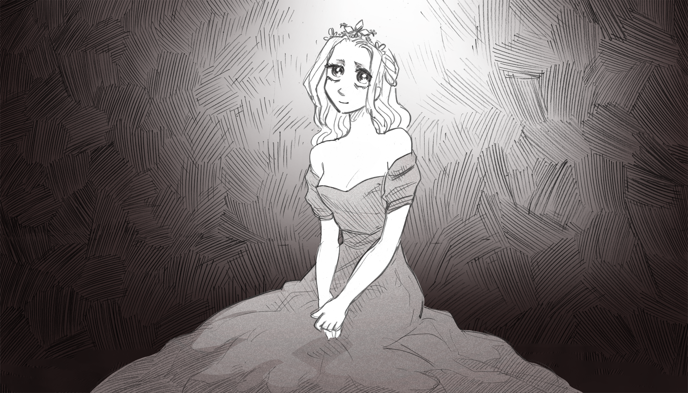
In the video game Slay the Princess, the titular Princess is an avatar of the Shifting Mound, deity of change. She is transformation, the ebb and the flow, the capacity to change. The Princess's shape depends on others' perception. She becomes what others see her to be, and she grows more powerful the more she is perceived and the more is known about her. Among other things, she is Death itself, and if she's not slain, she will destroy the world.According to the theory of structural dissociation, humans form their sense of self in early childhood, but trauma can interrupt that process, leaving the ego underdeveloped and fragmented. I clearly have some kind of a dissociative disorder. There's an whole zoo of those; depending on which symptoms dominate, it could be DID, OSDD, DPDR, or any number of other scary acronyms. The stock "Tyler Durden" is a fictionalized and over-exaggerated case of DID; I seem to not have it that bad. cPTSD is the most "conservative" diagnosis – I had some kind of early trauma, the only question is what it did to me. My ego formation was definitely interrupted. I have no constant and no center, no stable sense of self; I define myself realtive to other people and take the shape of what others see me to be. I am a creature of perception, just like a certain other well-known Princess.
I remember the first time I distinctly felt like I'm shifting a different form. In my last year of high school, before college, I was walking through the village with my father. I told him about my anxieties. College will likely be difficult and stressful and I might crack under pressure. Father said that the only real problem I have is laziness; if I can beat laziness then I can endure anything. I'm a smart boy and I'm tougher than I look – whatever hardships await, I'll be able to overcome them.
What I didn't tell him is that I was specifically afraid of "overcoming" anything. I never understood why talking about "overcoming" and "enduring" and "resilience" was supposed to be motivating or inspiring. Overcoming hardship is a bad thing, isn't it?.. If you are in a situation where you need to overcome things then you have already in some sense failed, haven't you?
It's not even about how strong I am. Even if all the problems are completely within my power to solve, it's still better to not have problems in the first place! Just because I can endure a hammer smashing my finger doesn't mean I should seek out a hammer and smash my finger. If college is going to be difficult, that's an argument against going!
Now I know that this is an unusual take, but it sounded pretty logical in the context. Every summer they shipped me to the village to live with my grandparents. They gave me the first real "upbringing" I had. My pre-school life, inculding whatever traumas happened, were snugly buried under the blanket of amnesia; and my parents were very laissez faire and never tried to slape me into anything in particular. So it was my grandfather who did most of the work. His running theme was how brutal life is and how strong you have to be to survive. He "prepared me for life". While you're a child, he said, you gather strength, build character, teach yourself skills, learn to work and to endure. You have to lay down the foundation now, while you're in the tutorial area, where food and shelter are free. Nothing will be free when once you're an adult, you'd have to survive by your own strength, and if you don't learn all you need to learn, you're going to suffer. He was a warrant officer, an alcoholic, "train hard – fight easy" enjoyer, and he taught me how to be a Real Man.
I was utterly horrified of the 'adult life' he was preparing me for. Adults have to labor around the clock without sleep, scrape by on pennies, defend against all kinds of enemies, hustle, adapt, stay sharp at all times, and absorb constant injustice. The scariest stories were about how cunning and quick thinking let him avoid some catastrophe. Perhaps he thought that the bigger the disaster he'd narrowly avoided by being smart, the more motivated I'd be to be smart. What I actually got from it was that it only takes one misstep, one wrong answer to a puzzle that Fate decided to give me that day, and I'll end up homeless and destitute and doomed forever.
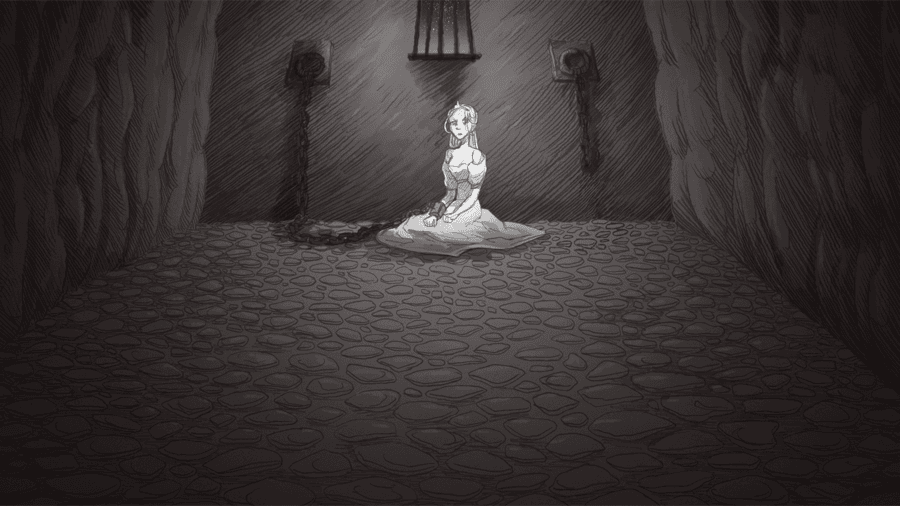
And there you are. Are you here to kill me or something? is the first thing the Princess says when she sees the protagonist, the Long Quiet, with the knife. She's careful and suspicious, expecting an attack.A notable feature of "grandfather realism" was the universe being utterly incomprehensible and unpredictable. One time he got hold of some expensive candy bars and treated me to them. The bars had raisins, which I hate, so I rejected them. He was visibly offended, and he told me about a friend who developed some kind of illness from a nutritional deficiency, which had left him paralyzed – and raisins happen to contain exactly that nutrient, so I'd better eat up. I ate the candy, but I remembered that story as part of the larger insight: the universe is chaos, anything can happen, you can end up crippled because you haven't eaten a candy once in childhood. There is no logic, you can't hope to understand it, you can only memorize. Any overlooked detail can spell disaster. Read and re-read all the encyclopedias and pray you remember the correct puzzle piece when you need it.
Growing up, I gradually realized that grandpa was full of it and I shouldn't take him seriously. But by that point he lived in my brain rent-free. Quite literally, too: sometimes I heard his "voice". It wasn't a hallucination, more like persistent and vivid intrusive thoughts, thoughts that someone else was thinking. And that someone else was very clearly my grandfather. Typically he'd criticize everything I do, scold me for mistakes, and just generally being a buisance. These days I can talk about "introjects", but back then I didn't know these kinds of words. And even if I did – the trauma that shattered my identity long before grandpa got hold of me was hidden from my memory, so I'd never think to apply the term to myself. So one of the first things I did when I first Internet access was to ask on a random web forum about it. They explained it to me in Freudian terms: it was "overactive superego". I triend to read Freud, but he was way too complex my age. And by the time I got too deep into that rabbit hole, I'd already shifted into a new form, the grandfather shut up, and I wrote that symptom off. If I could have imaginary friends in childhood, why not imaginary enemies in adolescence? Foreshadowing is a narrative device in which important plot elements are hinted at before they become relevant.
I always had the same question for my grandfather – both the real one and the simulacrum in my head – the same question. Suppose I do put in the work and become strong and smart and resilient and all that jam. What do I get in return? Here's a distillation of all the fights we had about it over the years, if form of one dialogue:
Me: This "hard work" you keep talking about sounds positively miserable and pointless, why do I need it anyway?
Grandpa: He who does not work, does not eat.
Me: Okay fine. Why do I need to eat? Just to have the strength to "hard work" next day again?
Grandpa: You need it to live! You'll die without food!
Me: I'm fine with that actually. All of this doesn't seem worth it. Even now, at its easiest and most carefree, my life sucks. It's difficult and I'm sad and it's not worth even this meager effort – and I don't even have a job yet!
Grandpa: You mustn't be this weak! ! What, you want everything handed to you? To just lounge on the sofa and have others feed you for free?
Me: Don't you?
Grandpa: That's not how the world works.
Me: Well if it's impossible then I'm not going to have it, makes sense, I'll just die then.
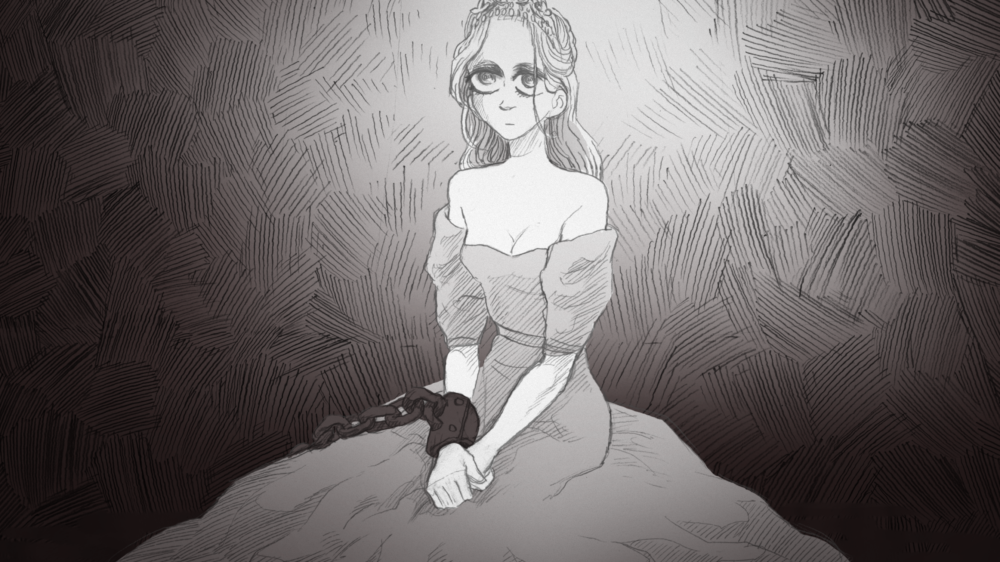
If the Long Quiet asks the Princess what she's going to do once she's out of the basement, she can't answer. She doesn't know anything about the world outside of the basement, and her only motivation is to leave it. Why? She doesn't know. It's just unbearable to stay inside.Adults look at my search for a reason to live and said "wow, what a smart child, already pondering the eternal question of the meaning of life". That drove me up the wall: I didn't give a damn about the eternal question, I needed a practical answer to a mundane question: what are the specific reasons not to kill myself right now? Nobody could answer, but everybody was convinced that life was good and I shouldn't kill myself. I grudgingly accepted this with humility: if all the adults think this way, but I, a literal child, think otherwise, it's probably me who's got it wrong, and I'll get it when I'm older. But as I got older, I only got more doubtful.
So here I am, wadering around the village with my father and thinking. How much do I trust the argument from humility? I'm 17 already and I still have no idea why adults choose to live. It's possible that the secret is so arcane that I won't grasp it until I'm 30. Or maybe there is no secret ingredient, there is no reason, life is worthless and we should all die. I'm about to go to college with all the hardships that come with it – it'd be really stupid if it turned out that I'm not going to get anything "in return" and I suffered all this time for nothing like a chump. For how long should I keep investing into an unprofitable venture? How deep in the red is it fine to dip before admitting that I'll never get my return and I should just cut the losses? Maybe the time is now?
Father talked about how I'm smart and strong and resilient and healthy, and that I have a great future and a well-paying job and success in all endeavors, as long as I work for it and not just waste time. The question I didn't ask was – what endeavors? Let's say I can truly achieve anything. What should I achieve? And what for? Let's say I have all the money in the world to solve all my problems – then what? How is it better than dying and therefore not having any problems to begin with?
The main thing keeping suicide off the table was the lack of available methods. Before that I tried to jump out of the window a few times, but each time I chickened out and ran away1later I'll learn that I have a phobia of heights. Now I was scanning the village – what else do I have? Could I hang myself from a pull-up bar? What if they save me and I'll be alive but brain damaged? In the end, I decided to break that dilemma in favor of "try and see". I don't know what I'm supposed to achieve and why, what everybody is expecting from me, and what would a "success" look like. But at the very least they've mapped out the intermediary steps: go to college, graduate, find a good job. By that time I will likely be smarter, more mature and wise, and therefore will likely understand what I was working towards. In the meantime, I'll just accumulate general-purpose resources – skills, money, connections – and figure out later what to do with them.
A different person returned home.
Chapter 2: The Prisoner
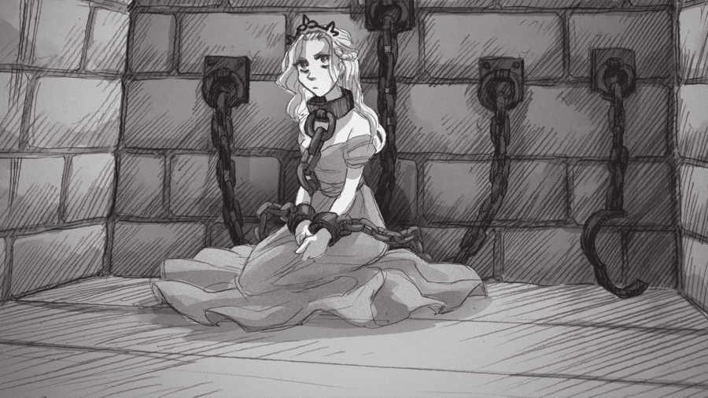
Amnesia in media usually looks like a sudden, total blackout. That happens, and I've had it. But there is also "grey" amnesia, when sparse vestiges of memories survive, fragmented and blurred, fading vibes of a dream. There's also "emotional" amnesia, when you remember what happened, but only nominally. You can recite all the dates and events, but you can't recall anything from your "inner" world, what you felt like, what you thought about, why you did what you did. As if it wasn't really you, it was not your memories, you just watched them on a screen. The entire Prisoner arc is a patchwork of those vague amnesias. I technically remember all that happened. Sometimes I remember my internal monologue, but rarely. Good thing I kept a diary, and also whined at everybody about all my problems. So I can tell you what I felt – reading old chat logs and Reddit comments, or recalling words that left my mouth. I know that person – that "Timujin" – very well, I've reconstructed him from his words, actions, and diaries of a madman. But hardly more than that.
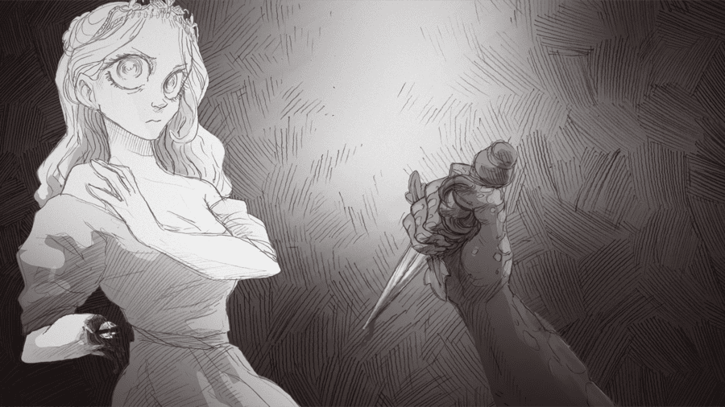
If you try to free the Princess, Long Quiet still kills her involuntarily, and she reincarnates as The Prisoner. The Prisoner understands that LQ never wished her ill. When he came to her with a knife, crippled her, and tried to kill her – he just wanted to help. This doesn't change the outcome, though. The Princess is still in the basement, in stronger chains. Quiet is dangerous, and even in spite of all the good intentions she needs to be careful around him. Use his assistance, but never let him close, and never show vulnerability.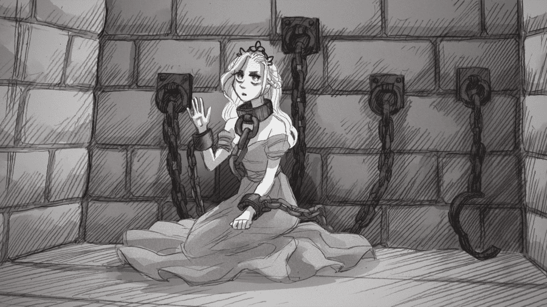
I'd prefer we keep some distance until we've sorted this out
Timujin was a withdrawn, solitary, and antisocial man. He placed himself in the "Lawful" third of the D&D alignment compass, and locked in to studies, career, self-improvement, productivity, and the whole package we nowadays call "sigma grindset". Three different people independently called him a "tsundere". He was a techbro and really into Lesswrong. One underappreciated but, for him, crucial part of Eliezer Yudkowsky's teachings was taking the totality of all responsibility for your own life. That was his "hook" to the memeplex – everything else was along for the ride. Another thinker in that area with similar ideas was Scott Alexander. One of the first posts of his that I read was about how he and his friends in school roleplayed an imaginary universe. He kept coming back to how much good in his life came from that roleplay, how much he learned, and how many of his real world connections grew from that hobby. It seesawed me between rage and depression; one thought about that roleplay could trigger a flashback spiral and ruin my day. I didn't have any friends in school and always struggled with social skills, so Timujin burned with envy at Scott's early experience and languished in his own impotence.
No psychiatrist ever told me what it was. I didn't figure it out either. In my then-understanding, flashbacks send you back to an event; I didn't recall any past events during those flare-ups. Much later I learned about the concept of emotional flashbacks and realized that, yes that was it why did nobody tell me it's a thing. I didn't know what trauma was and what flashbacks are like. I didn't remember the events that I was flashing back to.
Scott asks about trauma – why, even if you control for all the obvious confounds, fat-shaming is so traumatizing and sabotages people's ability to lose weight, but Holocaust victims leave the camps stronger than before? This is a special case of the more general question – why doesn't the severity of trauma depend significantly on the severity of the traumatic event? How can rape ruin one's life even if no physical harm was done? How can ridicule leave depeer scars on the soul than being shot at during war? The answer lies in why traumatic memories are stored in the body differently from regular memories.
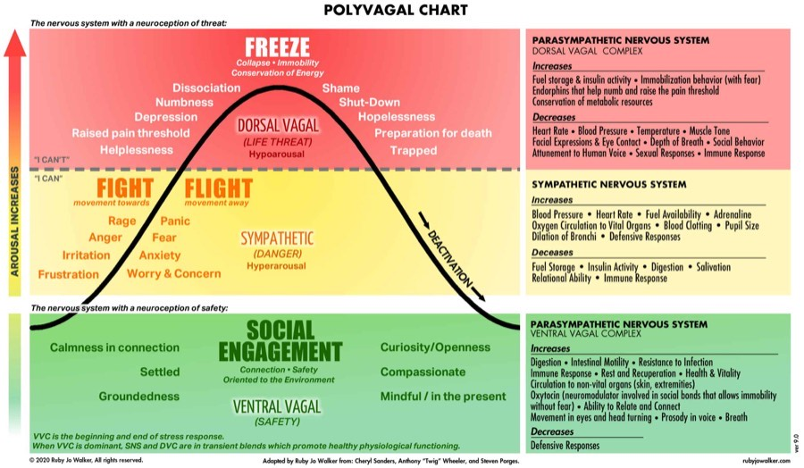
This chart maps the three possible states of the autonomic nervous system: hyperactivation, collapse, and social engagement. Eyesight check! What is not in the picture?
In a dangerous situation the ANS arouses kicks in the fight-or-flight response. The system was built for things like predator attacks, and if you're still dealing with that predator after the first few minutes you're probably losing. So you should hit harder or run faster; the longer the danger lasts, the stronger the arousal. When it maxes out2you lost, ANS engages the freeze reflex. It shuts down, which subjectively feels like exhaustion, depression and dissociation. When the ANS senses that the danger is over, it returns to the green zone, where it can start integrating the experience into the long-term memory. Sometimes this doesn't happen. The ANS stays in the yellow or red for too long. Dissociation prevents long-term memory integration, and they get "stuck" in the ANS, which never gets the memo that the danger is over. This is basically what PTSD is – the body remains constantly vigilant and ready to start fighting/fleeing/freezing, at the expense of non-emergency systems like immunity, memory, or digestion.
Note how exactly the ANS understands that the danger is over. What returns the system into the green is social engagement. The danger is over when you're among other humans who can protect you. This is the only off-switch for hyperarousal. Humans are social animals. There is no good way to cope with trauma alone. There are bad ways that emulate social engagement in some way (e.g. writing a diary). But the most consistent predictor of trauma recovery is social support.
Scott Alexander compares two things that are orders-of-magnitude different. That the Holocaust is worse than fat-shaming is the coldest take ever. But why is it less traumatic? My answer is – because they kept people in large groups in the concentration camps. The victims has the opportunity to integrate memories. When the guards weren't there, they could talk about what happened, trauma-dump to each other, express sympathy for each other, and otherwise bring their nervous systems into the green. No matter how bad the experience was, they could process it and not let it crystallize into trauma. "Fat shaming victims" is not a cohesive group that is oppressed as a group; in most cases it's thin people bullying the fattest one in the group. Fat people have to absorb all the shame alone. If they try to complain about bullying, they hear something like "why don't you just lose some weight then"; a direct refusal of sympathy that could bring them to the green. So it all stays in the body until the mere thought of losing weight triggers a flashback. Support groups help, but not everybody has one, and they are unjustly maligned. That's one reason why I have such seething contempt for that hyper-individualist drivel about how your problems are your responsibility and you shouldn't drag others into them. Leaving someone alone with their problems is the surest way to turn even the most trivial of inconveniences into life-ruining and others-endangering trauma.3 if you want to put this on a meme, I recommend "it's only in the gas chamber that a Jew can understand a tenth of the suffering that incels feel when a girl says no" .
As a child I had little social support. Father mostly ignored me for the first seven years of my life. Mother and grandmother told me about how he once came home drunk, and I ran towards him to hug him. He kicked me on approach, and I smashed into a wall ("like a looney toon" – Mom). When I dug up and rescripted that event with a therapist, it freed up a lot of free space in my head, so that one definitely left a mark on me. Mom was broadly warm and loving, but every time I went to her to vent about a problem, I got nothing but mockery. "That brat is half your size, how is he bullying you? How did I raise such a doormat meekling?" Recently I asked my mother about why she did that, and she told me that she was trying to encourage me through "the spirit of contradiction", that wanting to prove it wrong could give me additional motivation. I have no idea who told her about that trick, but it worked in reverse – all the problems, even seemingly minor ones, stuck as trauma and became permanently unfixable. And with that kind of foundation, I never made many friends outside of the family either. My model of the world was a fundamentally dangerous, precarious place full of enemies, that I need to survive all by myself. Even my own mother couldn't be relied on; even the people who love me and only wish me well would strike at any vulnerability they see. The only one who's really on my side is myself. Non est salvatori salvator.
Worse still, I was in a position not just of danger but of weakness. My mother, seeing how gifted I was, had enrolled me in school young. It really played a number on my brain, being always smaller and weaker than other children. My "giftedness" and academic success meant nothing to them. Classmates correctly identified me as the weak and useless one, picked last in gym class; even just lining up by height, I was always dead last. And I'm The Shifting Mound – I become what others see me as. I became an outcast – not relative to any particular ingroup, but just in general, as a part of my essence and identity. I internalized the fact that I'm always in the last place, and that nobody would voluntarily want to talk to me or prefer to others in any context.
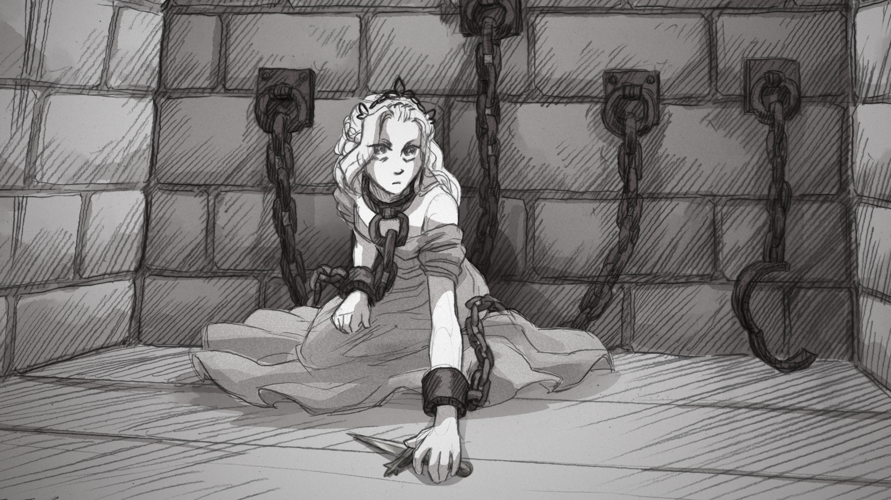
Like I trust you to come any closer with that knife. All you're going to do is hand it to me and watch me work.It wasn't the only clearly traumagenic symptom. Insomnia was the bane of my life. One of the least impressive superpowers in Naruto is instantly falling alseep, and when child-me saw it, I dreamed about obtaining it. On a coldly rational level I understood that it's not that useful compared to all the fireballs, teleportations, and mind controls, but nothing else produced that immediate gut reaction of I want that. Every night, simply falling asleep was an achievement. Falling asleep five times a week – cause for celebration. And the longer I stayed awake, the harder it was for me to fall asleep, I spiraled into madness, and the sleep deprivation magnified everything that was wrong about me. And when the body was too exhausted to stay awake a minute longer and I finally slept, it wasn't a refreshing sleep at all. Nightmares, sleep paralyses, hourly compulsions forcing me out of bed – it was hell. Have you ever been tortured in a dream? It hurts a lot. And even after I finally snap out of it and sleep away the debt, I'm exhausted and hurting and sick of fighting all the demons, so I need to rest and recover. During one particularly long insomnia attack I called an ambulance in the middle of the night, begging them to do anything that would knock me out. They injected a large dose of phenazepam (benzos) and told my mom that I won't even be able to walk all the way to the bed, I'll collapse on my way there. I didn't sleep that night.
My sleep paralysis demon was literally my father, which I always played off as a joke. But then my mom told me how, when I was little, my father had no respect for my sleep: he'd come home drunk at night and turn the lights on and make noise and talk loudly. I don't remember it – but it happened, and my body remembered. I wasn't allowed to sleep soundly as a child – so I'm cursed to never sleep soundly in my life. The most significant breakthrough in treating my insomnia came when my therapist and I specifically excavated those memories and rescripted them. It worked better than industrial doses of tranquilizers.
A lot of it could have been prevented with early intervention. Get a therapist to work out the traumas before they turn into self-sustaining spirals. Teach me how to handle the idiosyncrasies of my brain. Teach my mom that gifted kids need more support, not less. Maybe let me retake a grade. But there weren't any good psychologists around. I've seen some, and they called me an "indigo child", and concluded, quote, "intellectual development outpaces social development so much that it unbalances the personality". They came right up to the edge of saying "autism" and stumbled at the last step. Nobody told us what to do about it, other than make use of this gift and IQ-max.
I felt that something was very wrong, but I didn't know how to explain it to others. On some level I sensed that I lacked human connection and support. I brought it up to a school psychologist, but she screwed it up. She asked me to say exactly and precisely, what specifically I wanted from other kids. I was too young to understand my own feelings and couldn't have articulated them clearly. After a few false starts I settled with the only operationalization that I could put into words – that if I needed help, I could get it from them. She asked "so, you want to learn manipulation, right?" I didn't fully understand what that word meant, but I said "yes, teach me that". She refused and that was the end of it.
When Timujin kept getting triggered about Scott's social life, he didn't know any of that. I tried to excuse away my lack of social capital by telling myself I was just an introvert with face-blindness — those are just the handicaps I have to work with. But Scott is also face blind, and he called himself "the most introverted person you've likely met – anybody more introverted never leaves the house". It didn't prevent him from talking about his packed social calendar and casually drop phrases like "out of my top 100 friends…" It signalled to me that I wasn't merely on the low end of extraversion – other people managed more than me with the same handicaps. I was clearly doing something wrong. I had to figure out what I was doing wrong and do it better. It was the main reason why I went all-in on forum-based social deduction games on dm.am 4hereinafter — "Mafias". It was the closest thing within reach to a group of people with a shared activity, the kind of thing that could grow into a circle of friends, and I was willing to squeeze all I could out of it.
But I couldn't just get close to people, that would be dangerous. Even when I was trying to "socialize," trying to befriend people or join groups, it was a military operation: concrete strategic objectives, attack plan, cost-benefit analysis. And, of course, a shitton of masking.
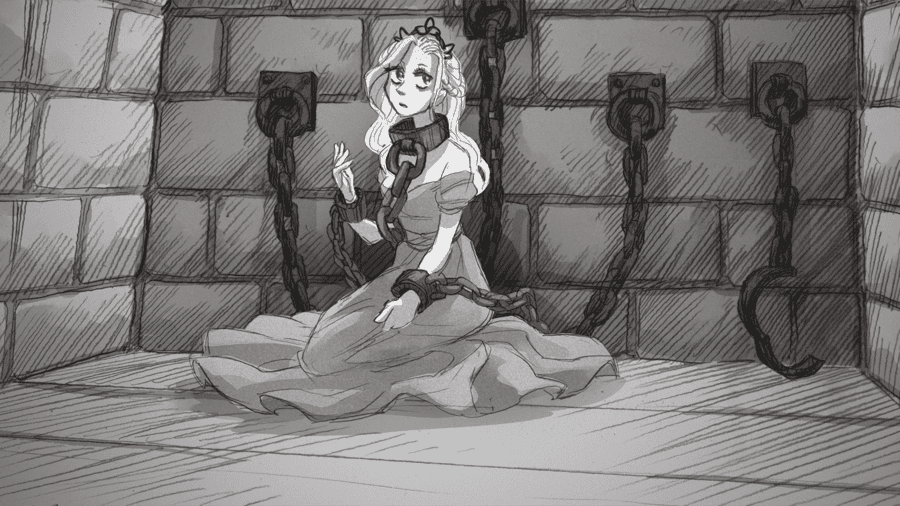
What are your intentions for me? You have a knife. What are you going to do with it? Why are you here?Every neurodivergent kid learns to mask their symptoms – pretend to be neurotypical so other people don't notice. That happens constantly and subsonsciously. You don't need to directly punish neurodivergent behaviors to make the kid mask; simple expressions of disapproval signal that this is not the way to behave, and after years of those micro-corrections, masking becomes etched into your body at a pre-conscious level. Masking comes up most often in the context of autism, because it's the most pointlessly cruel. Many symptoms that autists have to mask are barely inconvenient to others; most of them are merely impolite. And even when others do need to take action to accomodate them, it's minimal; they're not any costlier than accomodations that neurotypical people ask for all the time, they're just different.
But the harm is immense. Masking demands constant effort, leading to stress and burnout from seemingly nowhere, depression, and often trauma. Autistic burnout is brutal and it can disable a person for years. And the dumbest paradox of it all is that to heal, one has to unmask first. One has to identify which of their habits and behaviors are masking mechanisms, and unlearn them. They need to act more autistic, express more symptoms. Others tend to see it as either fakery ("you started having all those symptoms only after they told you you're autistic"), or regression ("since you started therapy, the symptoms only became more severe"). The society still punishes people for autistic behavior, and unmasking is still swimming against the tide; not everyone can afford to do that. Over the course of my childhood, I learned to mask not only my autism, but also face blindness and depression. I could also say that I was masking dissociation, but that'd be redundant, as dissociation inherently implies masking.
You may understand dissociation as the literal opposite of "association". Association is a connection between two disparate things, so dissociation is lack of connection that's supposed to be there. The parts of you that should be working in unison – perception, cognition, emotions – don't fully communicate with each other. A healthy example is "auto-pilot" or "highway hypnosis". You can drive a car and solve all the car-related cognitive tasks on the background, without noticing it, while thinking about something else. The thinking is, of course, happening, your brain makes all the predictions and deductions – it's just that all of that is dis-associated from conscious perception and memory; it's happening "under the hood" where the homunculus can't see it. Zoning out of a boring meeting, getting pulled into a book until the external world stops existing – that's also dissociation, on the subclinical end of the spectrum.
{kind=link}
Further along the spectrum sit derealization and depersonalization. When it seems like the world is not real and you're not real and everything is an illusion, like you're in a dream or in the Matrix. Sometimes it's you who's not real, it's not your body and not your thoughts and not your feelings. My metaphor at the time was – it's like the world is a lagging video game. The graphics are realistic but not quite like real life; stuttering framerate makes everything look slower that it should be; the input lag is kind of annoying; and the protagonist is not literally you, but your avatar that you're puppeting from behind a screen. When you're that detached from your own thoughts and actions, they quite literally happen on their own. The alien thoughts of "my grandfather" were mine in the most literal sense, they were in my brain after all. But they didn't feel like mine and didn't fully obey me5 I relate immensely to walking simulator protagonists. That thing when you look at a photo on your bedside, and the hero says someting like "that's my wife, I love her", even though you never knew it and never wanted to say it? Mood . Parts of you can thus act and think independently from each other. Timujin was one such part. The mask that I presented to other people to function in the society detached into its own entity, abstracted from the rest of my psyche.
On a Narcissistic Personality Disorder discord server, user invisiblemonster suggested this metaphor for personality disorders. 6
normally when I quote people from non-public spaces, I hide the source to avoid doxxing. But invisiblemonster only allowed me to quote with attribution.
I believe all personality disorders are cPTSD gone through the looking glass, becoming ego syntonic. And through recovery from PDs, we have to go back through the looking glass even though we’re going to get sliced up from the broken shards from when we first crashed through the mirror as the disorder and maladaptive defenses and traits were developing in childhood and adolescence.
Trauma itself is ego-dystonic – it feels like something wrong, foreign, an intrusion, not a real part of you, just symptoms of an illness. Nobody likes being in a flashback or drowning in obsessions. But under the demands of functioning in society without cognitive dissonance, the symptoms have to be integrated into the personality. They become ego-syntonic – they feel like simply the right things to do and the right person to be, like sensible and desirable qualities. If previously one was struggling with irrational paranoia, now they simply believe that the world if full of enemies, that they are right to treat everybody with suspicion, and everybody else is naive and needs a rude awakening. If previously one had to endure pain and misery, now they believe that they deserve to suffer, that suffering builds character, and that anybody who's afraid of suffering is a meek coward.
Timujin was the entity that went through the "looking glass". The entire notion of a "precarious world" became a part of my personality. Masking used to feel like masking, like conscious performance and active suppression of my needs. Grandfather's teachings were scary tall tales – they gave me quite a few sleepless nights and anxiety spirals, but they weren't literally true. But that was what I needed to survive further, and Timujin was the protective layer of dissociation that executed the mask automatically and naturally. I only revently realized that a quote by Yudkowsky that I liked a lot and posted in my socials was literally my grandfather's worldview, except more intelligently said:
It is a very important lesson in rationality, that at any time, the Environment may suddenly ask you almost any question, which requires you to draw on 7 different fields of knowledge. If you missed studying a single one of them, you may suffer arbitrarily large penalties up to and including capital punishment. You can die for an answer you gave in 10 seconds, without realizing that a field of knowledge existed of which you were ignorant. This is why there is a virtue of scholarship.
Now I understand that it's an unhealthy relationship to life. And I knew that in childhood. But in the middle, Timujin internalized it as something accurate and just the way the world works.
invisiblemonster continues:
Those shards have kept us stuck in an ego syntonic wonderland. We see those shards of glass and become prisoners to our own behaviors and perceptions and cope by telling ourselves it’s normal to us. This is the classic kinda narc[issist] saying, “sounds like a you problem, not a me problem.” We feel entitled to not have to experience unpleasant emotions or pain, so why would we go back through that broken mirror, back to the real world, when we’re content in our own wonderland? It’s difficult to break down that ingrained ego syntonic nature. But once we’re able to face the pain, once we have the coping skills and support systems in place, going back through the mirror is the hardest work one will ever do, but also the most rewarding. You get to recover the parts of you that the disorder was hiding. And that’s true for any personality disorder, no matter the label. I want people to focus on that, on the actionable steps to take in recovery, rather than the specific diagnostic labels.
Hyper-responsibility, hyper-independence, hyper-discipline – these are textbook features, practically clichés, of internalized trauma. Until you "deprogram" them, until you crawl back through the looking glass, you won't get better. But Timujin never saw those traits as something negative or toxic. Of course you're the only one who's responsible for your own life! You have to solve your own problems! You shouldn't expect others to save you, or blame others for your mistakes, or be lazy. According to Timujin, those were just the qualities of a strong human being.
One other trait that I thought to be a part of my personality, but was in fact unhealthy dissociation, was "thinking emotions". Timujin considered himself to be more rational than emotional, he rarely displayed strong feelings (except for mysterious but infrequent bursts of rage). Not having emotions is, of course, not possible. They still happen "under the hood" – it's just they they don't connect to conscious experience, so the person just thinks about them and rationalizes them. It's ironic and instructive that the sterotypical "rational" person is cold and emotionless, even though it's literally the other way around. People who feel and express their emotions are the rational ones. If you don't feel an emotion, it just directly flows into your thoughts and actions. Instead of feeling the emotion and, ideally, sharing it with other people, you just follow the impulses and rationalize them post-factum.
Dissociated emotions can also cause psychosomatic symptoms. Timujin had frequent and excruciatingly painful headaches7 I initially called them "migraines", but only provisionally, because there weren't any migraine symptoms except pain. Later I determined them to be cluster headaches. I fully support normalizing psychedelic vapes, because cluster headaches are really really bad, they hurt so much the pain becomes spiritual. No risk of abuse can possibly outweigh the ability to drag people away from the Gates of Hell. . They happened when I was on upper floors of buildings, so I initially thought it had something to do with atmospheric pressure. But it didn't seem to depend on weather, so it couldn't be that. I brought it up to a doctor, and he said that it's a suppressed phobia of heights causing psychosomatic pain. I doubted that – how could he possibly know that?! He didn't even examine me, he just listened to my complaint?! And I don't feel any fear when I'm up high?! But he turned out to be correct. Post-Timujin, when dissociation became weaker, the headaches stopped, but instead I started feeling real fear when on upper floors. In other words, the fear was there all along, the only question is how it shows itself. Be emotional, or it will hurt!
The most novel experience of adulthood to Timujin was to not be dead last. Sometimes people approached him and talked to him! Voluntarily! Some asked for advice and took as some kind of authority! A girl asked him out and they started dating! And he was bigger and stronger than average! The contrast with the past was startling, and this shift in other people's perception "locked in" the Timujin identity. Constant feeling of unreality gave way to crystal clarity. Timujin felt stronger and ready to win. He even joked about how his ambition was world domination8Which is somewhat harder than the previous goal of world destruction.
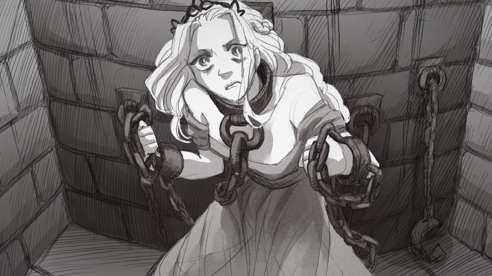
And if being nice isn't enough motivation? Well, I'm not afraid to resort to violence. If you come near me with that thing I will strangle you with these chains.But it was just Timujin who experienced that crystal clarity, not me more generally. Timujin opened with deep masking and detachment from all his flaws and needs to fit in and socialise. But just because he suppressed all his problems didn't mean they went away – it just meant that their effects were imperceptible to conscious awareness. For most of my life, whenever I learned that other people were doing… well, anything in groups – go to a concert together, celebrate birthdays, or even play a co-op game – I just collapsed on the floor. Timujin managed to suppress those flashbacks and dissociate from them, so I didn't have that bad of a reaction to socializing. I intentionally sought out group activities, tabletop game nights, events, even dates. But dissociating from flashbacks doesn't mean not experiencing them. They caused a distinct sense of wrongness, and that never ended well. I could never enjoy events, because they felt like battlefields. Often I got headaches, sometimes nausea and vomiting, sometimes I was just anxious throughout. One time, at a friend's house, I mishandled my fight reflex and gave the friend a vicious enough the reason you suck speech that he ran away, and then his mom forbade me from ever stepping foot in her house again. They later cooled down and forgave me, but it's unsurprizing that I had trouble making friends. One of my internet friends regularly triggered me with tales of his rich social life – including airsoft, drug-fueled raves, hikes, and theater club. Later when a friend from college offered me to join his airsoft team, I ran away in terror, and then tried to suppress the painful thought that my friend plays airsoft.
Timujin felt that he became a different person. I didn't think to pathologize it – I said that I just "left it all behind" (lol) and "matured". The most objectively noticeable change was how he played video games. In school, I played extremely cowardly and cautiously. Always on the easiest difficulty, conservatively, defensively. I beat Space Rangers without killing a single ship – and it wasn't a challenge run, I was just afraid of getting into fights even when I was obviously stronger. The child felt weak and powerless against a precarious world where any mistake means death or worse – of course his brain would always be playing in easy mode, where end results is the only thing that matters, and where it's of utmost importance to never lose and never make mistakes. It's expected that a child who knew that he's always the weakest one in the room would instantly give up and abscond whenever he's up against someone – even against a video game AI. That was my nature, defined by others' perception. Timujin had the opposite idea – he loved challenge and risk. I remember the moment of realizing this contrast very well. I was sitting in a lecture hall, playing XCOM: Enemy Unknown on Classic+Ironman9one-save permadeath mode difficulty. My friend also played this game, save scumming liberally, and we talked about it. I said that playing games like this without permadeath defeats the point, and he argued that permadeath removes all the fun. His position reminded me of myself in the past, and I wondered why it's so unintuitive to me now. Why can't I empathize with the past version of myself? Reflecting about my past, there wasn't any gradual change in tastes; I just woke up one day and my gaming style switched to its opposite. Timujin never solved that puzzle and never realized how The Shifting Mound works. But it was enough to get into a community that didn't see me as ontologically weak, to stop being ontologically weak.
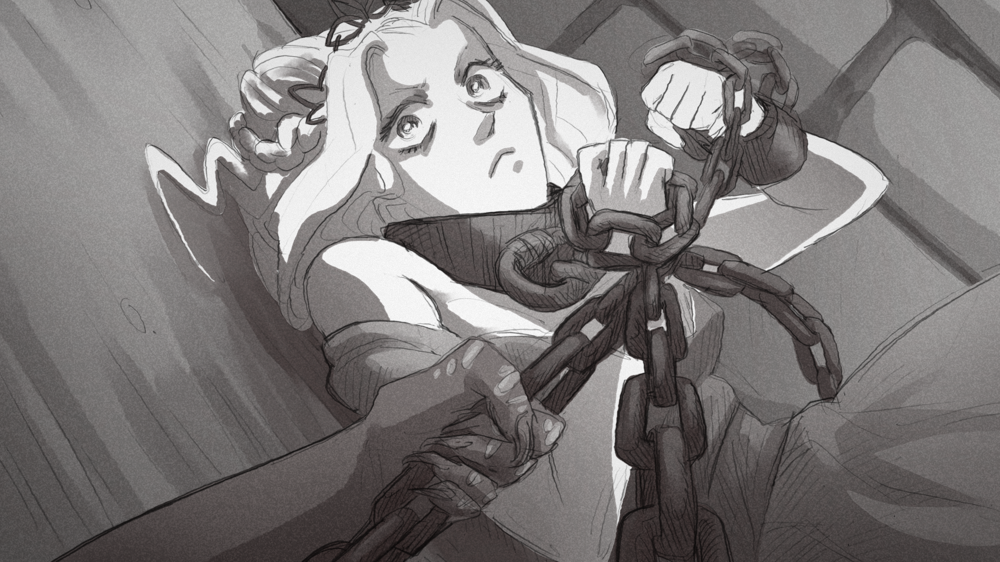
Do you think this is a game? Do you think these chains take away my say in things?!As far as the "standard normie life goals" went, the ones that Timujin was born for, I was on top of the world. Sigma grindset did its thing. I was braced for the jump from ordinary high school to Bauman University to be brutal, but it wasn't. I passed the first semester with flying colors. At the end of the second semester, faculty from the mathematics department called me in for a private meeting and said I was wasting my potential on the engineering track and should transfer to them. I agreed on the condition that my friend gets to move with me – they disliked that, but ended up agreeing and pulling the strings. That's how I got to study at the track way more advanced than what my ЕГЭ 10Russian SAT equivalent scores would allow. For the first time im my life I wasn't the smartest one in the room11As we used to say, when we switched tracks, the average IQ of both tracks went down, and I saw it as an opportunity for growth. I also enrolled in Technopark and worked part time as a private tutor. I got an internship in Mail.RU – the office was on top of a skyscraper so I didn't last long before my phobia forced me to quit, but I got one paycheck out of it at least. The world was my oyster. So far.
Spoon theory is a metaphor that people with chronic illnesses or disabilities use to describe energy limits on every day tasks.
Spoon theory is a concept used to represent how individuals manage limited energy. It is a metaphor describing the amount of physical or mental energy that a person has available for daily activities and tasks, and how it can become limited. The term was coined in a 2003 essay by American writer Christine Miserandino. In the essay, Miserandino describes her experience with chronic illness, using a handful of spoons as a metaphor for units of energy available to perform everyday actions. The metaphor has since been used to describe a wide range of disabilities, mental health issues, forms of marginalization, and other factors that might place unseen burdens on individuals.
Dissociation may take your perception of your own body and seal it away from consciousness. In The Body Keeps the Score the author recounts a case of PTSD where the patient being massaged couldn't tell when the massage started. My dissociation was never that severe, I can tell if people touch me. But one thing that I only realized in my 30s, when I started trauma therapy, was that my spoon-o-meter is broken. I can't tell if I'm tired. I literally never feel tired. This doesn't mean I am not tired! Just as emotions can exist without rising to consciousness, exhaustion also exists regardless of what you think about it. The more tired I am, the worse I function. But I can't understand that; to me it seems like I'm fresh and ready to move mountains, until my energy hits zero and I just collapse on the spot.
Now, after therapy, I feel my exhaustion much better. But I still have to consciously track my energy expenditure and plan strategically, work out with my System 2 if I should slow down, or take a break, or call it a day. Now I can notice when my body is telling me that I can still do things, but that fucker is lying and I need to plant my butt on the couch and keep it there for the next X hours. The fact that it feels like I'm able to be healthy human levels of productive without being tired is a lie and a trap. But back then I didn't know that, so I just did however much I felt like doing. I didn't even spare myself physically: once I walked my girlfriend home along my usual route from university, and at the end she was surprised by how long we'd been walking and said she was tired – why didn't I just take the bus? 12to Americans reading: no, we didn't have cars, and weren't expected to; Russia is way less car-centric that USA Back then I just hinted cheekily at my heroic stamina, but I should really have taken the advice and not waste so many spoons daily.
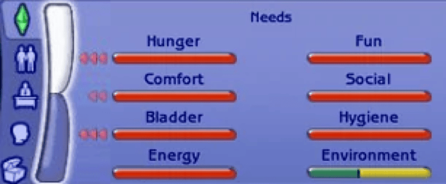
Exhaustion added up. Stress from masking added up. The emotions I never felt were doing their psychic damage over time. My needs weren't being met. I never felt any worse for the wear, though. As far as I could tell… I was just lazy and undisciplined. I procrastinate all day for some reason, even though I'm perfectly capable of doing my homework; clearly I need more discipline. I bury my face in the phone the entire lecture and don't remember a thing; I need willpower and focus. I half-ass everything; I should try harder. I can't wake up with the alarm; I should use one of those apps that make you solve a math problem before you can turn it off. It felt like I had a surplus of spoons, I just wasted them on pointless crap like video games. I needed to try harder, develop discipline, motivate myself. I got into the productivity culture with all those GTDs, pomodoros, work ethics, and frog-based breakfast recipes. None of that worked, and I was getting more and more behind on my studies.
I'm not the first one to say that laziness does not exist, but I'm kill-stealing that horse. Humans work as much as they can. In some cases they work more than they can, borrowing productivity from the future and paying interest with their health. Just sitting still isn't something a homo sapiens brain would ever want; if there's a surplus of spoons, the body will find what to use them for. If you aren't doing enough, it means that doing enough is outside of your capabilities right now. Perhaps you're tired and need some rest. Perhaps there's an illness – either physical or mental – that stops you; and you need to cure it or work around it. Perhaps – much more often than you would think – you're wasting too many spoons on masking. But absolutely the last thing you should do is to treat this as a personal moral failure, which is what the word "laziness" implies. Guilt is the perfect fuel for splitting – whatever the problem was that kept you from working, you dissociate from it, can no longer interact with it or introspect about it, and it becomes basically unsolvable forever. Calling a person "lazy" is a self-fulfilling prophecy. Timujin's problem was that he worked too much and rested too little. But he interpreted it as "laziness" and "bad work ethics" and "procrastination", and so he split from his exhaistion and lost his ability to rest. My mother noticed that – she told me several times that I "don't know how to rest", and she was right. Instead of recovering from my exhaustion, I was either doing useless but spoon-draining things (like reading difficult books), or simply wrestling with guilt. The more tired I was, the less productive I became; the less productive I was, the more I forced myself to work; the more I forced myself to work, the more tired I was getting. The problem became unsolvable. In internet spaces on mental health this is a common story; the "laziness spiral" seems to be a common trap. There's this toxic meme embedded in our culture, that if you're not keeping up, you should try harder. No. That is simply not how the human body works. In terms of spoon economics, "forcing yourself to do things should be understood as a payday loan; it may get the thing done now, but you'll pay for it with your ability to do things in the future. If you're regularly forcing yourself to do things, you're not going to "train your willpower", your brain is not a muscle, it has no mechanism that makes it stronger after overexertion. You will become weaker and dumber. And if you don't stop – something will give, and you'll be burning sanity for fuel.
It happened to me one doomed summer. It started with music in my head. Most people experienced earworms at some point, but these ones were much worse, and getting worse by the day. They never stopped; I've been hearing the music all day, I fell asleep with the music, I heard it in my dreams, I woke up to the music. I couldn't hear my own thoughts, couldn't focus on anyting, couldn't think. I tried everything I could think of to kill them, but they didn't go away; at best I could dislodge one track with another. My insomnia grew worse – the music didn't let me sleep. Soon I was drowning in my own thoughts – music; mental exercises to stop the music; intrusive thoughts about the music; neutralizing dangerous thoughts that could make the music worse; mental rutuals that could make me fall asleep despite the music; horrible triggering thoughts blending with the music; laughing at the idea that I got rickrolled into insanity…
OCD and dissociation are known to often go hand-in-hand, but nobody knows why. This article suggests several causal models. The second one – dissociation causing reduced sense of agency, and attempts to restore it causing OCD – matches my personal experience, so I can vouch for it.
Later I will identify my new symptoms as Pure O OCD, but back then I didn't dare to self-diagnose and went to a psychiatrist instead. The first one tried and failed to treat insomnia with medication; as long as I sleep one night per week, she said, there's no point in treating anything else. No safe tranquilizers could reliably knock me out. I went through several doctors via the "this case is too hardcore for me, call this number instead" chain, until one of them diagnosed depression and gave me antidepressants and antipsychotics13as well as cerebrolysin and some nutritional supplements, but I'm not sure they did anything. This helped a little. I was still insomniac, but not as severe as to not sleep for a week. The mindstorm didn't fully stop, but it got quiet enough for me to hear my own thoughts. I was scared of all music, even turning off the sound in video games, afraid that a song could get stuck in my head again and restart all the symptoms. But nobody in this referral chain noticed the dissociation, and nobody told me that not feeling exhaustion is a thing that can happen. Hardcore autistic burnout wasn't even on my radar as a hypothesis; I felt quite energetic and eager, just insane. I didn't realize that I needed to rest more. As a particularly ironic cosmic joke, I asked in dm.am chat how to help my insomnia, and they suggested physical exertion before bed. If you're tired enough, they said, you'll drop asleep the moment you head hits the pillow. This is not the only time when "standard" life advice intended for normal people backfired spectacularly and only made my problems worse.
Thankfully, I eventually noticed that I sleep much worse after exercising, but I never generalized it to me just needing to rest more in general. The "laziness spiral" kept spiraling. My academic performance dropped to the bottom of the class. The professor who vouched for me to swap tracks was bitterly disappointed. I barely got the minimum grades, relying heavily on friends' help and unabashed cheating. Which of-fucking-course seemed to my never-tired ass like I should try harder and slack off less. The depression diagnosis also partially sabotaged my recovery – normally they say that if you're depressed you should go outside more, exercise, talk to people, do hobbies, anything that breaks you out of the bedrotting rut. Which is perfectly fair if you are simply depressed. But in my case it was utterly counterproductive. Especially the "talk to people" part, because having to mask both autism and flashbacks was also hard on the psyche. I put my effort into finding solutions for depression and insomnia – but those were merely symptoms of a deeper, more fundamental problem, that was hidden under so many layers of dissociation that neither me nor the doctors could notice.
On the social front, things appeared to be going well. In the real world I had trusted friends and romantic experience. On dm.am I had a stable Mafia community who loved playing my games. Nearer the end of the Timujin era, I got to know a girl from the Mafia on an IRL meetup, and we started dating. She lived in a different city, so we only met from time to time for short "adventures", but it was more than enough for Timujin to put a checkmark next to "find close friends in the Mafia community". Sadly, our chat logs were lost, and we didn't leave much evidence of our adventures outside of the chats for the purposes of secrecy. So my information about that relationship is imperfect and I can't be fully certain that my reconstruction of it is accurate. But my best guess is that it was more "adrenaline-based" than "oxytocin-based" relationship, with some kismesis. It was overall a positive experience for us both – unlike Timujin and his early college sweetheart, who weren't really compatible, were fighting a lot, and only dated for six months. Most importantly, our dates were spoon-replenishing; not enough to reverse the burnout, but enough to slow down the slide into insanity. It all seemed great. Foreshadowing is a narrative device in which suggestions or warnings about events to come are dropped or planted.
A clarification about my Data Science job, for the people to whom it means something. They trained and deployed neural networks on a single CPU. When I began working, they've been thinking about maybe running it on a CPU cluster. One of the first things I did was to tell them that NNs work much better on GPUs. I re-implemented them on a GPU and easily improved training time by several orders of magnitude. They never used any standard libraries – not TensorFlow, not even numpy or pandas, all the matrices were just normal Python lists of nums. When I suggested using TensorFlow, my boss told me that avoiding standard solutions gives the firm some kind of vaguely defined flexibility advantage. The most cutting-edge model they had when I came was using closing ticker prices over the last X days as parameters and the closing ticker price for the next day as target. Never before have I ever felt more strongly that I was the smartest one in the room.
I've graduated successfully – I remember nothing about how my defense went, but I have an A in my diploma. "It's time to proceed with my career!" some idiot said, oh wait that was me. At this point I already had job experience in Data Science. Yes, Timujin also worked a job, the guy was bafflingly blind to his own HP bar. It was as bullshit a job as they come. The idea behind the startup was to train neural networks to trade stocks. Not a single person involved knew anything about how anything works. When I made sure that I wasn't under some kind of misunderstanding, I explained to my boss that this entire idea was failed from the start and it will never work. He pushed back at first, but then ended the discussion by saying that the startup was to be considered successful as long as the investors kept giving us money; whether or not our models ever make money actually trading was irrelevant. I srugged and accepted that I was spending 20 hours per week just for the money and CV-padding. At the beginning I spent the time developing my data science and stock market skills, but then I exhausted everything this LARP could give me and just pretended to work. I didn't want to keep doing this shit after graduation.
If I was a character in a novel, readers would complain that the author is being too unsubtle with this whole "hero is destined to be a game designer" thing. In pre-school when they showed me how a deck of cards works, I quickly grew bored of playing Blackjack and Durak, and invented my own rulesets. My grandmother had a book about the history of gambling, from Sumerian proto-dice to modern Las Vegas casinos, and I read it so many times it fell apart. When I was playing with my cousin, I made the rules, and he followed. On the last computer class in elementary school, where we were studying Logo, the teacher told us to use the turtle to draw something cool as a "graduation project". I wasn't good at drawing, but I'd already borrowed a programming book from the library. So instead I coded a betting game – four turtles reskinned as cars drive around the track with random speeds, and the player bets on who arrives first14I got an A. I collected dice, and I had had a large box of various cool and exotic dice. When parents bought me Legos, I used them to build strategy games with well-defined rules, using dice for randomization. And when I got on dm.am, I got popular for my Mafia games. Nowadays I would say that I was an autistic child who had games as a special interest. Back then I didn't know those words, so I just interpreted it as "talented at game design".
So shortly after graduation, I got a job as a game designer. I still didn't feel tired, merely mentally unstable, so I didn't take much of a break. I spent some time in a mental hospital15that's one way of resting and went to work full time right away. A Core Game Designer for mobile.
This time the team knew what they were doing. Maybe a little too well. I knew in the abstract that the mobile games industry was predatory. But actually seeing how the sausage is made was different. It's worse than you think. Meetings looked like comic book supervillain round table. Every new idea about how to maximize psychic damage inflicted on players invited cheers. And judging by the supplementary materials they made me read, it's all industry standard; there's no shortage of mind-rape machines invented by game designers. If they ever make a modern remake of Thank you for Smoking, mobile game designers deserve a spot among the Merchants of Death. And even though this time we were making a functional, profitable product, the boss still treated investors like useful idiots who needed jingling keys and Potemkin villages, lest they be cranky.
I did my job. They commended me on it. But it never felt like an achievement and never made me proud of myself. It wasn't a difficult job; all the tasks were well within my abilities, and the management wasn't overbearing and mostly left me to my own devices as long as I delivered results. Objectively it was way easier than college. But it was still extremely exhausting. I came home only to barely recover before the next day, with not a spoon left to do anything else but stare into the screen. Mission doubt is a real component of burnout; if you don't fully understand what you're doing and why, it adds psychic damage.
And I didn't understand why I was doing what I was doing. The Timujin construct and all his self-improving and harship-overcoming machinery didn't pay off. I did everything I was expected to. I graduated from college and moved on to "adult life". And what did I find there, on the other side? Work, and recovery from work; no time or energy for hobbies or friends or fun; no opportunity to even play video games. And I lived with my parents! I didn't even need to clean and cook for myself, and I was already at my limit. And this job wasn't even socially useful, it was harmful. A bullshit job merely fails to make the world a better place, but this one made it worse. And the more harm I inflicted upon the world, the more money I made. And I wasn't even having fun. On paper, I was doing what I always liked doing, but de facto I couldn't care less.
What was the point of trying and studying and improving, if this was my reward? All these torturous years, all those nights when I begged the Universe to end it, no matter how, just end – worse than in vain? That fateful summer in the village, I asked – what do I get in return for living? Is there anything worth it, or is it all just a big grift? Back then I decided to keep investing in this unprofitable venture, and it was a mistake. There's nothing to get "in return", and it's never going to be profitable. The best moment to kill myself was ten years ago. The second best is now. Thankfully, I'd had enough suicidal ideation over the years to figure out a place and a method. There was a railroad track not far from the house, and I planned to lay down in front of a train, near the turn so that it can't notice me and stop in time. There were false starts, a few times the fear won and I dodged the train, once I had to leave because people noticed me. Over a month of regular attempts, but eventually I did it. I was laying across the track, head on one rail, butt on another. I saw the train close enough to me that I wouldn't be able to dodge even if I wanted to. When I was certain that I was at the point of no return, that these were my last moments, I was happy for the first time in my life. The relief was incomparable. I did it. I finally did it. It's over. I'm free.
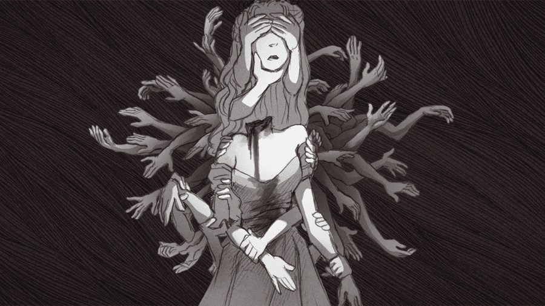
Interlude: The Damsel
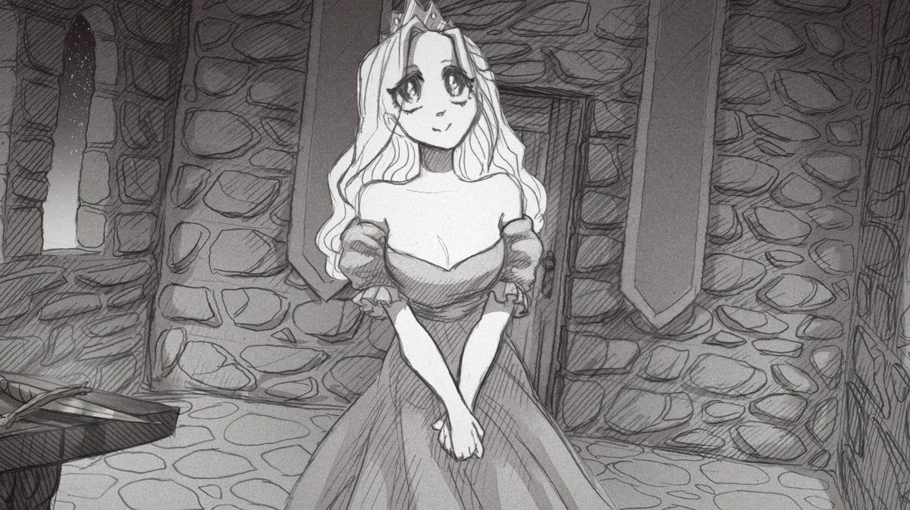
From the Solar Emprie discord server:
The Solar Princess: Implying that I'm on the both sides of the [good-evil] spectrum at the same time?
Inger: Depends on your phase IDK.
The Solar Princess: WDYM «phase»? Moon has phases, I'm the Sun
Inger:
Nighttime princess: mental health, everybody's rights, care and support
Daytime princess: if I could kill you, I would
Inger: Or something. Stop resisting, accept death
The Solar Princess:
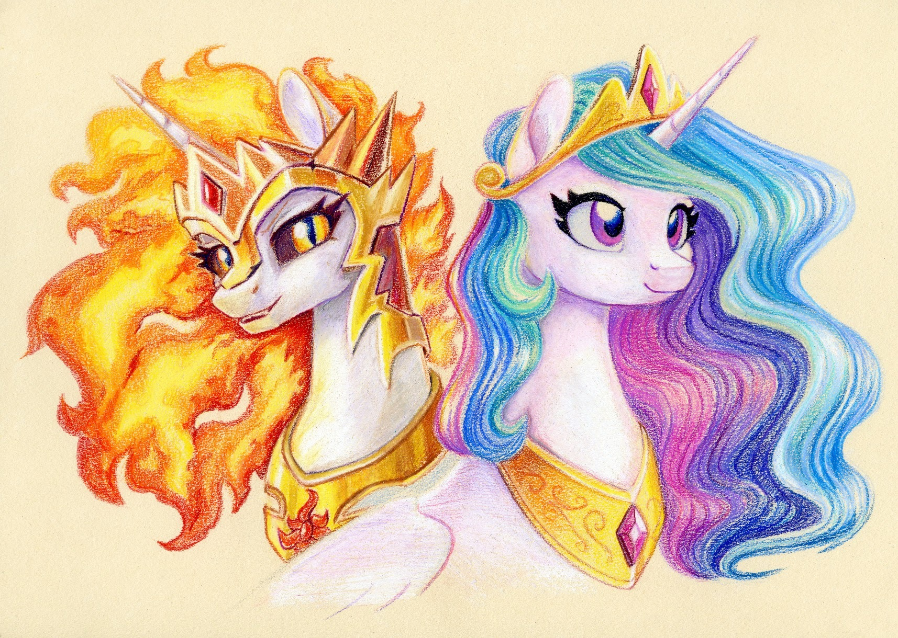
Inger: Exactly
There are two kinds of cPTSD sufferers. "I suffered, so I don't want anybody else to suffer like I did" and "I suffered, so why shouldn't they suffer like I did". As Inger correctly remarked, I swap between those two moods at leisure. Whether I'm in the "daylight" or "midnight" mode mostly depends on how my morning went; I have an unusually long morning wind-up when I'm still thinking in dream mode, but after an hour or so I settle into a form. Occasionally a mid-day trigger will flip the switch. The Prisoner is based on the "harsh" princess – the world around me carried the metaphorical knife. What would my life look like if I went along the "soft" path?
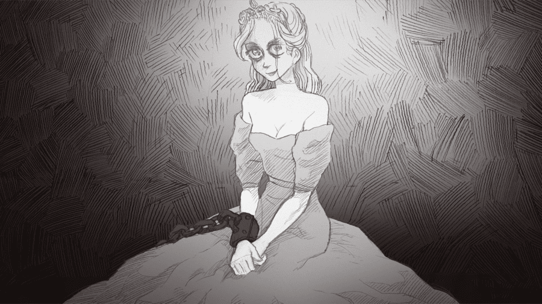
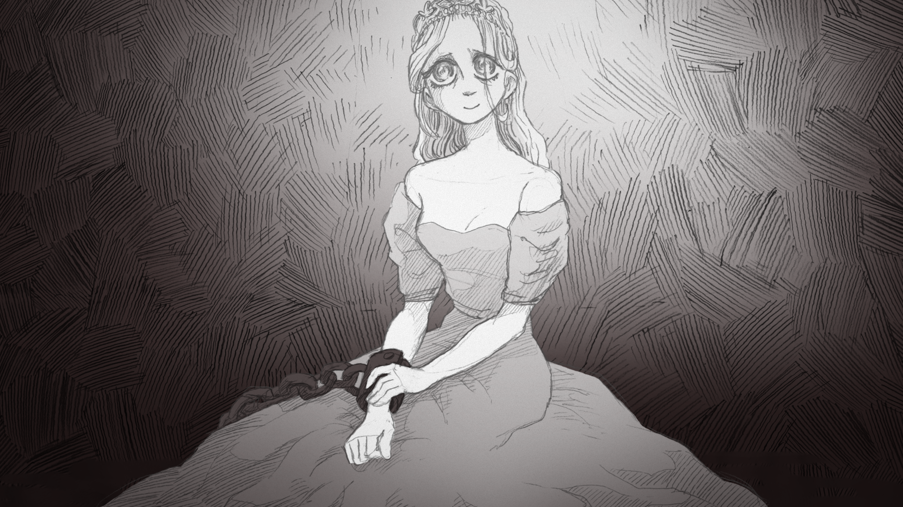
Depending on whether the protagonist carries the blade or not, the Princess takes one of two forms: "harsh" or "soft". It's not just that she changes her disposition when she sees the blade. In The Princess and the Dragon we can see what it looks like from her perspective. She starts in a blurry, uncertain condition; and then she takes one of two stable forms when the Quiet makes the choice.
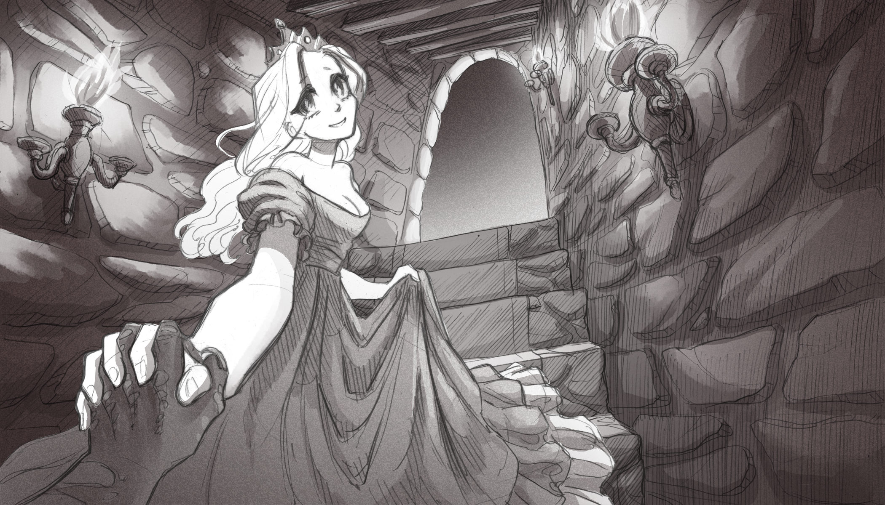
The Princess reincarnates into The Damsel if you come to her without the knife and save her. She's kind and submissive and agreeable; a flat archetype of a "perfect girlfriend".
I was always prone to maladaptive daydreaming. As a child, as a teen, and as a young adult. He who never fantacized about becoming rich or gaining superpowers or living a fetish, may cast the first stone. Often concrete fantazies about some specific boon grew into a more general "what if everything was perfect" kind. What if I get reborn as anyone I want? What if I get a genie lamp?
In their limit, those fantasies were always quite "untilitarian" – I used my new superpowers to solve the world's problems, save people, help the helpless. It was yet another reason why the Lesswrong philosophy resonated with me so much. I was living the fantasies on Harry James Potter-Evans-Verres logic – if I could reincarnate with superpowers, how do I use them for the greatest good? Often they were disembodied and impersonal; there wasn't a me in those fantasies, I was a hermit, and abstract strategic presence, or a digital entity on the internet. Even with a genie lamp, I couldn't imagine doing anything for myself, because there was no myself. Nothing is interesting to me, and I can't imagine what may be so good about life – there are only problems, and if my problems were magically solved, all that remains is to either delete myself, or to solve other people's problems. Why would I want to have fun or eat good food or fuck sexy people, if I could instead erase those needs from my body and those desires from my mind? One genie request could solve all the problems that fun, food, and sex were supposed to solve. I couldn't imagine life outside of the basement, and I couldn't imagine how anyone would want anything but leave the basement. I still don't understand, really. Nominally I realize that most humans do value something in life for its own sake, but I can't empathize with it. The upper limit of good is to destroy the world; that would solve all problems forever; what else is there?
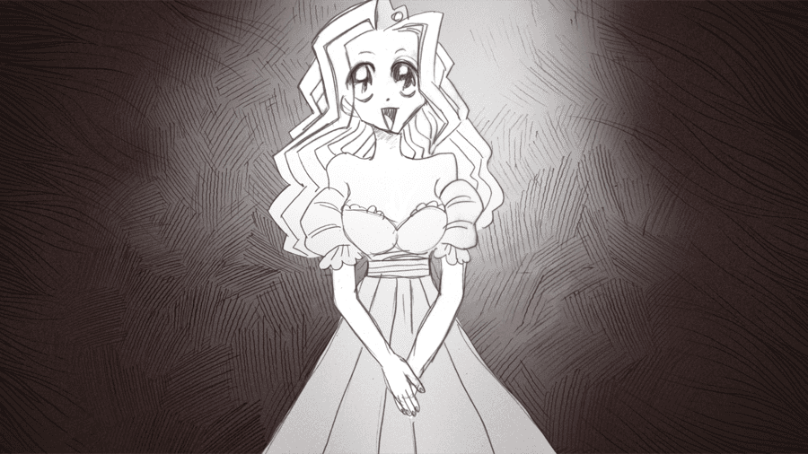
If the Long Quiet asks The Damsel what she wants, she can only keep saying "I want to make you happy". The more Quiet pries about what she wants, for herself – the more her image unravels and deconstructs. She doesn't know what to want.In the limit those fantasies hit the Adolfo Kaminsky dilemma. "Stay awake. As long as possible. Struggle against sleep. The calculation is easy. In one hour, I make 30 false papers. If I sleep one hour, 30 people will die." The more power I give myself, the more responsibility I have, and the more I am overwhelmed and unhappy. Fantasies that were supposed to help me escape the cruel world become quite a headache; I couldn't pick an option that would really make me happy. I have no idea what is there outside of the basement. Probably something scary and confusing.
Chapter 3. The Cage
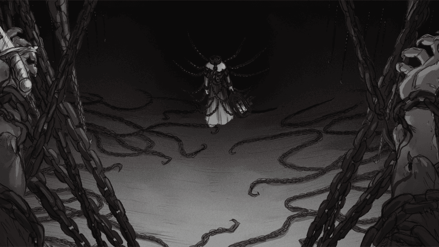
I survived. I lost consciousness and woke up in intensive care with a broken arm. I wasn't the only one astonished.
Doctor: At this place? At this time?! Nobody has ever survived that!
Me: Yes, that's why I picked it
They kept me in a mental hospital for a few months, then I had to regularly visit a psychiatrist. It was a miserable experience that put me off suicide for a long time. Laying across the tracks in front of an approaching train was the most 100% lethal method I could think of, but I still managed to survive. If I try again, and survive again, they will likely keep me locked up for longer and harsher… and I've been hearing scary stories from my cellmate who had been locked up for years now… and I might end up with some disability… No, it's not a risk I'm willing to take. I don't have a real choice, I have to live, at least until I come up with something better. I still have no idea what's so good about being alive, and I still don't want anything from life, and my attempt to walk the normie path has failed spectacularly. I have no idea who I want to be when I grow up. My attempts to live have failed, and my attempts to die have failed. I guess I have to… just keep existing. Under threat of punishment.
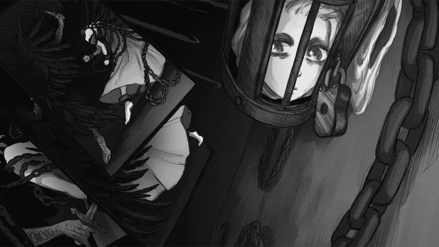
If The Prisoner's plan fails and she stays in the basement, she reincarnates into The Cage. The Cage no longer believes that anything can change. She allows the same cycle of violence to continue; understanding its futility, but not seeing any way to break out of it. She's just a head in a cage, while her body keeps doing what she was doing all this time.I changed. I felt very different. I barely remembered Timujin's past. None of this seemed particularly weird at the time. After a concussion, extensive mental health treatment, handfulls of pills I couldn't even name, electroconvulsive therapy, transcranial magnetic stimulation, and who knows what else, it made sense to lose some memory and personality. My girlfriend ended the relationship. After several dates she complained that "her boyfriend doesn't remember or love her anymore", and that I became more boring, slower, and overall worse. It was sad but fair, and somewhat funny. Amnesia ending a relationship wasn't the sitcom trope I expected to live through.
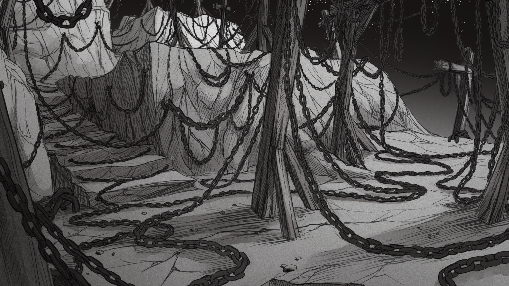
This time Quiet holds the blade right from the start. In some cases you may throw it away before you approach The Cage, and it's the only way to break the cycle. But if you already tried to do that in The Prisoner, then it's not an option this time.I didn't like my new form. It was… more boring and slower, yes, there wasn't a permanent tornado in my head anymore. But I was also losing myself in time, unable to maintain trains of thought, spacing out all the time. I lived my days "on autopilot", no more than existing. I didn't have a job now, and I had plenty of free time, so I could at least have fun, play video games, or read books, or watch shows. But they couldn't ever get an emotional response from me, I couldn't keep track of the plot or remember the characters or just make sense of stories. There was no pleasure in any of this, so I just played mindless time-wasters163000 hours with Slay the Spire – and no, I didn't just leave it running on the background. Sometimes I spent entire days in a vague stupor, barely comprehending what I'm doing. Sometimes I realized I didn't remember what I did yesterday. I self-harmed a lot; my parents later pressured me to move out by, among other things, the fact that they're creeped out by of all those pools of blood spontaneously appearing around the house. My state could vary significantly from day to day. I could book a doctor appointment, but end up with completely different symptoms when the time came. I have records of me occasionally doing quite complex tasks and saying that I'm not depressed at all and feel fine, but I don't remember any of that, and I have no idea how I actually felt at those times. If I didn't keep records, I wouldn't know that was a thing. The entirety of my memories of this chapter is a fragmented mess that I can't even order in time. I started random projects, studied random things, then stopped and forgot about them. I did whatever random things without a care and a plan for the future. Occasionally I tried to "restart my career" and get a job as a progammer or game designer, but kept failing at it. Somewhere around here me and my (ex?)-girlfriend enrolled in the Bioinformatics Institute to maybe work as a data scientist again, but we adandoned it after a semester. It was hard for me to remember that it happened at all; if not for the paper trail, I wouldn't even know if it was real or just a dream. At the end, the only job I was able to get was as a teacher, using my experience of private tutoring.
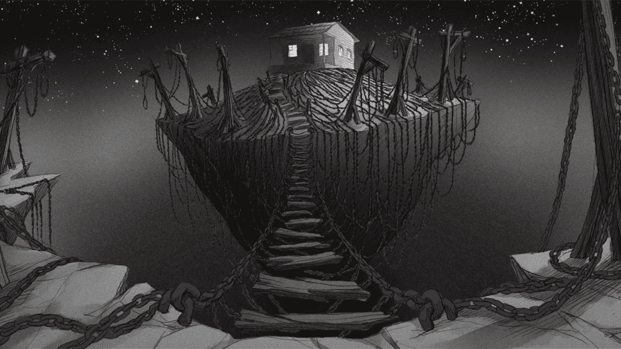
This time it's difficult to get to the cabin, You need to brave an old, rusty bridge over an abyss. «It's as if the universe itself wants to keep you from meeting her».
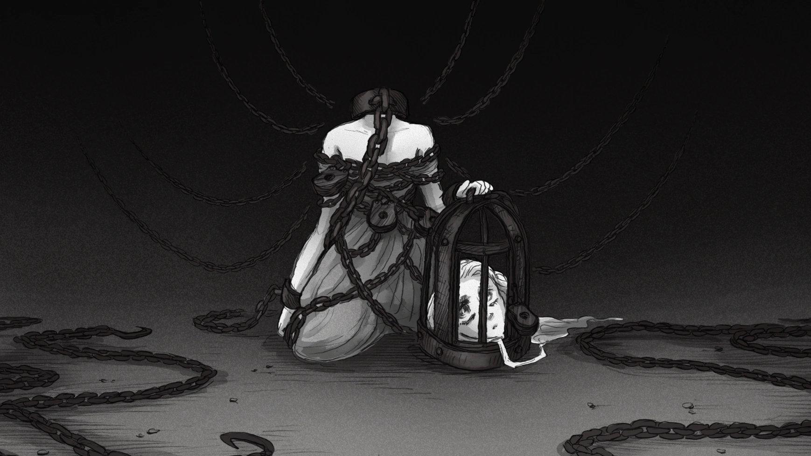
I'm just a set of eyes and ears. I don't make choices. At least not any that matter. I'm not my body, I'm just the thing that watches it. There's so much pain that comes from tricking yourself into thinking you have a choice. But none of us have choices.Now I know what it was. I was deeply dissociated. My symptoms covered about half of the questions in the dissociation inventory. But back then I was interpreting it as either depression, or head trauma. In my most unbearable moments I forced myself to assemble into a coherent agent, and maybe do something for my health other than just take the medications as prescribed. I tried to figure it out.
I ended up dismissing the head trauma hypothesis. I went through several neurologists, stuck my head in many big buzzing contraptions, and everybody unanimously told me that nothing was unusual and there's nothing to treat there17and one doctor said that my brain was "exemplary", which was the second weirdest compliment I ever got. And my symptoms didn't really match head trauma anyway: I dug through case studies of TBI, and hadn't found a single one that resembled my symptoms. So either it was just a regular concussion with no lasting damage, or it was some kind of novel and unresearched kind of trauma; in either case there wasn't much I could do about it. So I began studying depression. Lack of pleasure from books and games, blurry and blunted affect, going through life like a zombie – this all looked like a good match for depression.
"What happened to you?"
Nothing happened. I think I've always been like this. Outside of everything. A helpless observer to the things that are done to me.
So how do you treat depression? My childhood experience with psychotherapists was negative. Those dilettantes called me an indigo child, missed every real problem, and were also very annoying. They invariably offended me in some way, I activated my fight card, punched something and ran away. Eventually my parents gave up and stopped dragging me to them. Now, in the hospital, they offered me therapists. My complaints were "depression and insomnia", so they did cognitive-behavioral therapy. Which is actually a reasonable first line of attack for depression and insomnia. But it doesn't work that well for complex trauma. It often makes the problem worse, not to mention it feels like humiliating torture. I didn't know why it was like that, I just saw that whenever a therapist does something, it only gets worse. I was mature enough not to punch therapists this time, so I just asked for a different one, but no one did anything different. Eventually I gave the middle finger to the entire concept of therapy and started looking for the solution in pill form. Ironically, good trauma-informed therapy would have helped; pills can't heal trauma. But no therapist noticed the trauma buried under layers of masking. Perhaps I shouldn't have held back – maybe if I punched enough doctors they would have noticed the fight reflex flashback and realized what the problem was. But alas.
"Myth of Sisyphus" is a hillariously silly essay. The author, Albert Camus, gives a very persuasive case for why suicide is the only rational choice, presents a comprehensive case for why any alternative to suicide is in some way wrong. But then he's like "but suicide is for chumps, it's like admitting your own weakness". And then the rest of the essay is strategies for coping with the cognitive dissonance: how to distract yourself from suicide being the right thing to do. This always felt perplexing to me. "Yes, we both know that choosing life is absurd, but you have to be the rebel hipster and just do the wrong thing for no good reason, what are you, chicken?"
The literal meaning of life is whatever you're doing that prevents you from killing yourself.
– Albert Camus
The literal meaning of biology is whatever mental acrobatics prevent you from noticing evolution.
– Charles Darwin (absurdist version)
The speed of light is the absolute limit and you can't move faster than light. We need to make sure none of our engineers discover that law, otherwise they won't try to build faster-than-light rockets.
– Albert Einstein (absurdist version)
The literal goal of transportation infractructure is to distract everyone from the fact that buses and trains are good
– Alfred P. Sloan
I don't fully agree with Camus' logic, but ever since I read that essay I liked it as a demonstrative example. No matter how you put it, "suicide is bad" is not an idea that falls naturally out of the rest of our values; it's something that has to be assumed as an additional axiom. Imagine if all physicists in the world believed that sound moves faster than light and didn't care to explain how to square it with everything else we knew about physics. That's just about how I feel when trying to figure out what exactly makes life better than death.
Is this depression? Not quite. I never understood the point of living, even when I'm feeling good and having fun. Ever since I got diagnosed with depression, I interpreted it as me being just always depressed, that even when it seems like I'm doing fine, I'm still below the human baseline. But The Cage was my first experience of deep depression, past the point where the psyche just gives up and goes beyond sadness to emptiness. The Prisoner suffered, but she was active, she solved problems and moved forward, she bulldozed per aspera ad astra, sparing neither herself nor the asperas. The Cage, in contrast, just gave up. She sat in place or floated downstream, going through the same motions day after day. This twilight on the edge between depression and dissociation is essentially the freeze reflex, stretched to weeks or months. The biological purpose of the freeze reflex, to put it simply, is to stay still so that the predator doesn't notice you or thinks you're dead. But that's just the primordial signal from the vagus nerve; your conscious brain might interpret it differently. Changing nothing in your life and moving by inertia in exactly the same way you were moving yesterday, is also a kind of freeze. The psyche sees its past failures as "predators" and refuses to take initiative, because any deliberate action will only make things worse. And it's not necessarily unpleasant per se. Objectively, The Prisoner being actively chewed by a lion was in greater pain, than The Cage abandoning all wants and thoughts and agency and just leaving it to auto-pilot. The Cage said that she was less depressed than before the train incident, that the doctors and the pills helped. Of course all the days blur together, and I'm missing a full digit of IQ, and any time I try to do something I short-circuit and collapse, but at least the torment is over.
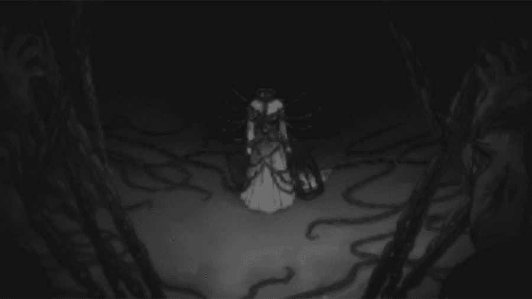
Just because you refuse to see the walls doesn't mean they aren't there. Give in with me. It's so much easier to let the world happen to you.The stereotypical depressive person never showers, never leaves the house, and never cleans the room. I never had issues with hygiene; the shower is my safe space to hide from the cruel world, reboot the brain, and silence obsessive thoughts. I was the only male teen in the world whose parents begged him to stop showering. As for leaving the house, I could always stand on the porch and ask the universe "now what?" in a passive-aggressive tone.
But cleaning the room was a problem. I hated living in mess, but making myself clean it was hard to impossible. Just thinking about cleaning was enough to drain the day's reserve of willpower. I tried to solve this with discipline and external motivation, but to no avail, it all only made me stress out more until I drowned in trash.
The first working solution came up when I just admitted defeat and let the trash accumulate, until my mother gave in and cleaned my room herself. After a few times that it happened, I heard the voice of my grandfather again. I remembered how he taught me to clean my room, and how he berated me for doing it badly. He tried to teach me the discipline of cleanliness, and he was the source of the ugh field. Every time I noticed my room was dirty, I remembered how my grandpa forced me to clean, and if I didn't clean well enough, to clean again. It wasn't a flashback per se, but it was a sting of anxiety, that spiraled enough to make my brain avoid cleaning for as long as it can help it. After I reframed my inability to clean from "I'm not cleaning" to "my grandfather is trying to stop me from cleaning", it became easier. And recently I've rescripted the grandfather-related memories, and the problem disappeared. Now I don't mind cleaning at all, I sometimes even desire it, as a kind of meditative physical break in a cerebral day.
Cleaning is not the only thing my grandfather taught me. But it was to be expected that the things that he taught me, are those exact things that I ended up pathologically unable to do as an adult. It's a good thing I only visited him during summer holidays, so he never interfered with school. I remember one time when he visited Moscow for a week, and he checked my homework and scolded me for mistakes. Had that gone on for long enough, I would have lost my math and language skills, and you'd never hear of me. But thankfully, I am now merely unable to work a farm, watch war movies, and be a real man 💅🏻.
My grandfather was probably proud that he let me out into the world with valuable life skills. But I ended up unable to actually develop those skills until a therapist undid the corresponding lessons. I wonder, how many parents fall into this trap, when they choose harsher ways of pedagogy? Punishments, scolding, and other kinds of negative motivation make children do the thing right now, at the cost of being able to do it later. Stress interferes with learning and memory formation on a very basic mammalian brain level. They are the first brain functions to turn off when the ANS hyperactivates. A human can only learn and grow when he's calm, safe, and sated. Acute stress shrinks the time horizon down to minutes; it is how your body "pays with XP" to get out of the encounter ASAP. But parents only see the child for as long as he lives with them. They don't normally see that after the child breaks off the relationship he ends up weaker.
Stealing is another childhood behavior that came back. I developed the habit in elementary school. I saw other children buy snacks in the cafeteria, and I envied them. But my parents never gave me spending money, so stole the snacks instead. This grew into a sort of kleptomania; later I stole toys, money, pogs. When I was away from my house, my brain was constantly passively scanning the surroundings for stealable items, even if I didn't need them. I was afraid to ask parents for money – after all, I was alone against the world and not eager to show weakness. Now that the Timujin construct was gone, the kleptomania came back. I shoplifted. A lot. Candy, cheese, canned food. I was still scared to ask parents for money, even though they didn't mind. I never had the courage to ask for "spending money"; I only asked when I had a legible, legitimate purpose for the money. And even then, I felt like a rabbit approaching a snake. I feared that this time I overstayed my welcome and they might stop helping me. My internal accounting was very aware that every ruble I spent on something I could steal, is a ruble that I won't be able to spend on something that's impossible to steal.
What made me dissociate so hard? None of the medications or procedures I went through were supposed to do it. Memory loss could be explained by ECT, but 1) it wasn't supposed to wipe so many years 2) I lost memories about things that happened after ECT but before the train, too. But the fact that my childhood behavioral patters all came back is the smoking gun. During The Prisoner they were all suppressed by Timujin, the constructed identity from beyond the looking glass. And now he's dead, having proved his uselessness. My only coherent identity was no longer at the wheel, and I didn't have enough observers to fix a new one. There was no conscious intermediary between trigger and response. The body acted on its own.
But I chased the red herring – medications. My state varied a lot from day to day, from depths of torturous rumination, to a merely bearable stupor. Sometimes I was even in an altered state of consciousness (i.e. sound mind). I tried to understand what it depended on, focusing on physiology – current medications, but also diet, sleep, exercise. I researched biology of depression, ran self-experiments, and even emailed some famous psychiatrists for advice. It was all very interesting but explained nothing. Every hypothesis failed. No lifestyle interventions can help if the nervous system is dysregulated, and the depression is a trauma response. Time and time again I ended up back in the cycle of hopelessness, more disappointed about my capacity to change anything. Every attempt to break the cycle only ended in pain and reminded me that I was there forever.
Occasionally the fight reflex whipped me into action, had me throwing myself at the bars of my cage. My core childhood problem – the rejection trauma – tried to take over, without Timujin to hold it back. When I was still dating my girlfriend, a particular trigger kept coming up. She often talked about some adventure or "a thing going on", or just generally about something cool or unusual from her life18 I won't give specific examples here, because cool and unusual things are by their nature distinctive enough to be personally identifiable .
A wave of envy washed over me every time it happened. I'd interrogate her for her "secrets" – how did she manage to do it? Where did she get the necessary money/connections/resources? Not getting a satisfying answer, I spiraled into depression – other people keep doing cool things while I'm sitting here in my house, having neither the skills nor the moxxie to do anything like that. The rest of the day was as good as gone – I wallowed in misery until I fell asleep.
Back then I didn't know that it was flashbacks. I merely felt overcome by emotions. First, anger and aggression; then, depression, dissociation, and pointless ruminations. Here's the chart again:
This is a fight reflex, escalating to freeze as the problem failed to resolve. It's interesting to see what provokes one or the other. Going from freeze to fight is rare for me, mostly as a sneak attack combo in physical confrontations. Stay there looking innocent until the opponent lets the guard down, and then strike.19 Once after a college skiing class, the PE teacher took back my skis, but turned away when I was returning my skiing boots. And, he reasoned, since he didn't see me return the boots, he won't give me back my security deposit. I stalled for a few minutes, then attacked, and tied him into a knot. In a minute, after I lost the element of surprize, he broke free and wrestled me down, but by that time the rest of the students left. They only saw my alpha strike, but not the retaliation. The rumors later said that I used the aikido technique called "hell's triangle" and got him hospitalized. . When bullied in school, I went fight, full mutually assured destruction, ripping faces off and throwing furniture. With parents, I mostly went freeze. I already told about how I froze to my father being drunk at night. But my mom gave me some reasons to freeze, too.
"Oubliette" is an apocryphal French torture technique. They threw the victim into a dungeon shaped like a narrow well, and left him there to die, surrounded by darkness and stench. They put the well on the top floors of castles, and built its walls thin. So all the time the prisoner was dying painfully, he heard the sounds of life from the rest of the castle. The music, conversations, and occasional smells of food added a layer of psychological torture, reminding the victim of what he had forever lost, teasing him with pleasures he can't ever partake in anymore.
My mother was always a positive person. She loved to travel, go to concerts and museums, carouse. She told me to always keep my spirits up and see the bright side of everything. When I had a bad day, or was otherwise miserable, she said that I should be grateful for the experience and be happy for what I had. And I hated it.
The way you prevent a negative experience from becoming trauma, is processing the emotions through another person. You have to return the ANS into the social engagement mode, and tell your vagus nerve that there are people here who can understand, help and protect. When I went to my mother for support, I didn't get support, or understanding, or sympathy. My problems, whatever they were, were left unaddressed. My problems, she said, were insignificant compared to the beauty of everything good in the world. I was left alone with my problems and feelings, and also got to hear about some generic good and positive things that had absolutely nothing to do with whatever I was going through. Recently I mentioned the phrase "toxic positivity" to my mother, and she immediately admitted that it's a good description of her. My mother is showing me all those cool things, but I'm sad, I can't relate to the good, I'm too sad! I'm sad, but she's always happy! I have problems, but she never does. It was especially disheartening after that "spirit of contradiction" trick. Right when my nervous system is actively flashbacking and seeing danger everywhere, it sees the good side of life. "Oh, you failed at something? Well, look how good I am at it. You have a problem? I don't! Look how happy I am that I don't have that problem! You're missing out on not having the problem! You can't do something? Oh how great it would be if you could! You suck at painting? Here's this inspirational book, this man is paralyzed from the neck down, and he's 100 times better at painting than you are. Not even disability can stop him! Unlike you, who's not disabled but still sucks. Oh you have no friends? Have you considered the fact that friendship is beautiful and indispensable? Friends are soooo good to have, they will always have your back. There's so much beauty in the world, so much fun to be had! Well, not by you, or course, you're the sad one, everybody else is having fun and enjoying life. You're sooooo missing out on not being me, who can do anything and is always happy".
It turned out to be a popular metaphor among cPTSD sufferers – a confined space that keeps you locked away from the bright and colorful world. Here's a tale of a hole in the ground, here's a dirty fish tank in the middle of an ocean (a). I began relating to The Princess the moment I saw her languishing in a basement; long before I learned about cPTSD. Apparently it's the common experience, given that everybody comes up with the same metaphor. As I was writing this post, I came up with the oubliette. There's no shortage of tiny, dark hells with lonely people in them.
Instead of being processed, the emotions got stuck in the ANS. My body had no way to recover from failures; every negative emotion stayed with me forever. The negative spiral, kickstarted in childhood, kept growing: every time I see omething good, positive, interesting, beautiful, I have one of two reactions. Fight or freeze. If the body chooses to freeze, I become sad. I give up and withdraw and dissociate. If it chooses to fight, I become angry, envious, resentful, and do what my therapist describes as "trying to regain control". It was essentially learned helplessness about having fun. Sometimes even just thinking about the concept of positive emotions could send me into a freeze flashback. I see people dancing in the park – I get depressed. I envy that they're having fun and I don't, but I also can't join them. I'm eating food, it's too delicious, so now I'm sad and my day is ruined. I play a video game, but the moment it becomes fun, it's eclipsed by resentment towards the developer for making better games than me. In this chapter, I still didn't know that it's called a "flashback", but I noticed the pattern – if I start feeling good, it means that it will soon become very very bad. I even had mental tecnhiques for "neutralizing" good thoughts or distancing from them. I knew that consciously blocking good thoughts was a remarkably silly thing to do, but I hadn't found an alternative. Since childhood I was essentially conditioned to hate good and avoid pleasure. If not physically, then at least mentaly – one day my parents took me to a vacation to Cyprus, and I spent the entire trip zoned out, nose stuck in a book in complete stupor, waiting for it all to end.
A good litmus test for this was Undertale OST. Timujin liked that game a lot, and he went through quite a rollercoaster of emotions that was relatively easy to come back to by listening to the music. But sometimes when I listened to it, I caught some rogue glimpses of rage or sadness that clearly weren't in the track. And it was empirically the harbinger of a flashback. If I can listen to the OST without any strange moods, it means I'm in a "safe" state now, and I can take a risk and watch a TV show. But if I inch into the past, it means I have to isolate myself from all that is good in life and spend the day working. Some triggers unrelated to positivity could also sabotage the stable state. After that I could just sigh, admit that the rest of the day is ruined, and play Slay the Spire with a Youtube video on the background until my heart attacks put me to sleep. I took note of those triggers just to make sense of what's going on, but even just reading the records could provoke a flashback. So my notes were covered with powerful ugh fields that prevented me from analyzing the problem rationally. I never understood the nature of those strange moods – so I just built my entire life around avoidance.
{kind=link}
My granddad had his own twist on the oubliette torture – his stories of victory through adversity. I'm not sure if it counts as toxic positivity, but it felt the same to me, and I am the measure of all things. His go-to example was the Story of a real man – a fictionalized biography of Alexey Maresyev. Just recently I flashbacked merely seeing a reference to it on the internet. Grandfather told me to read it, and then he kept citing it as a nuclear version of "I don't care if you can't" argument. Maresyev didn't have any legs but he still danced! If you can't do something it just means you're lazy! One day my father referenced the same story to tell me that I "can do anything if you apply enough willpower". The Timujin Protective System suppressed the flashback, and I reckoned my father was more educated than my grandfather, so I decided to argue the point. "What if someone's disability is lack of willpower"? Dad's colclusion after that talk was that this isn't a real thing, and trying to avoid responsibility for your own future using demagogy is unmanly.
Everything we witness is just another shade of the same, endless cycle. I wake up in chains. You come to me, knife in hand. You give me your implement. I cut myself "free". I wake up in chains.
When my girlfriend told me stories of interesting things in her life, the oubliette was the thing I was flashing back to. I did nothing interesting with my life. I conceptualized it as "lack of courage and decisiveness", but now I can more accurately say that whenever I had an opportunity to do something interesting, I froze. Her tales were to me akin to sounds of life from the outside, that I couldn't join. It was less of a problem for Timujin. Dissociation suppressed the flashback, and her courage was enough for us both. Under her gaze, the Shifting Mound took on a shape capable of having fun. We went on a lot of risky adventures. But after Timujin went AWOL, risky fun was depressing again20 I asked my doctor about it. Why do I feel so horribly sad after I meet my girlfriend and we have sex and go on fun adventures? He conjectured that maybe I don't actually like her and she's not a good person. I remembered about this when I heard the advice to say good things about your friends behind their backs, so I tried to recall all the times when I did that. . Insidious are the walls of the basement – invisible, yet paralyzing the captive on approach.

Bear, freed from a zoo, still paces around his cage
My girlfriend didn't want to date the new frozen me, but she was still telling her tales. My friends from college went their own ways, and I barely met them, but I had side channels that showed me that they lived their lives, did hobbies, and met each other. My mom, of course, kept travelling and doing activities and sharing tales and photos about them. I was alone in my basement, I heard the sounds of life, but I couldn't join. The Cage was my freeze response – give up, get depressed, and dissociate waiting for death. But the longer I languished, the more I chose to fight – throw myself against the bars, break iron with flesh, demand to be let out, with force if necessary.
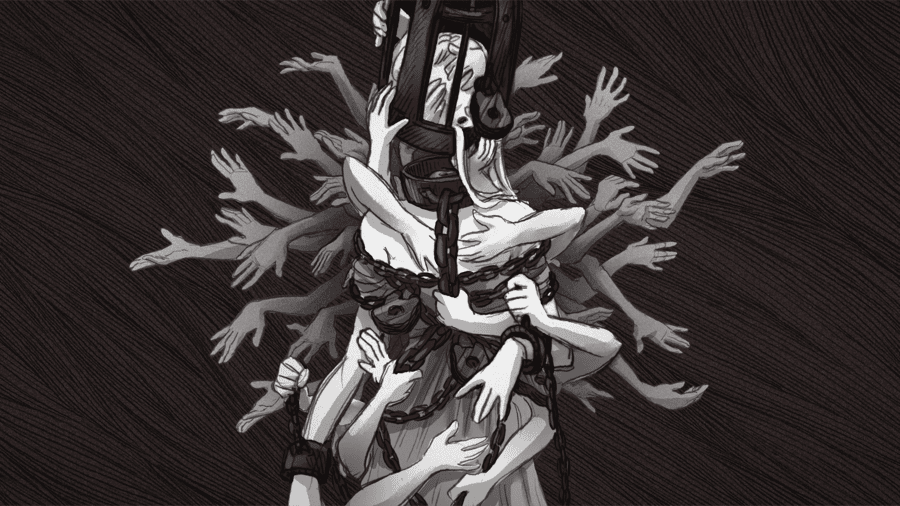
Chapter 4. The Nightmare
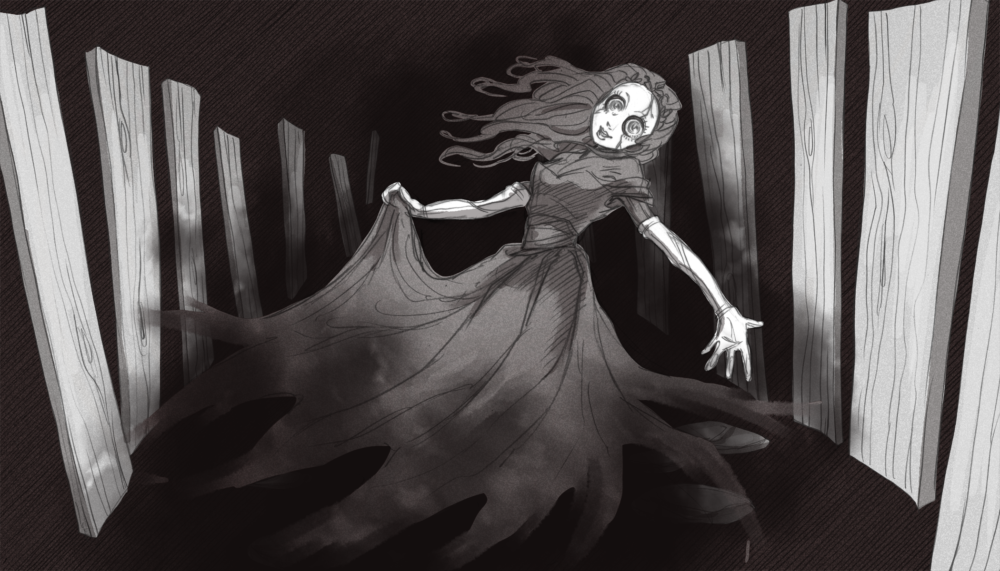
Memes say that autistics can't lie. It's not literally true21proof sketch: 2+2=5 ■, and in my case, experience with Mafias helped me to both develop my lying skills, and introspect about what makes lying so difficult. In my case, the biggest hurdle was that liars need a good memory, and my memory was terrible. I struggle with keeping track of what lies I tell to whom; the only way to make sure I don't contradict myself is to always tell the truth. Thankfully, Mafias happen on tiny playing fields with a short time horizon, and every event and word is logged, so I can just keep records of what I tell to whom. It's not as easy in real life.
Honesty being the supreme virtue was yet another reason why Timujin liked the Lesswrong memeplex so much. This was quite a self-serving morality: if I'm less capable of breaking a rule than others, then enshrining it into a universal law requires the least sacrifice from me and gives me the most benefit.
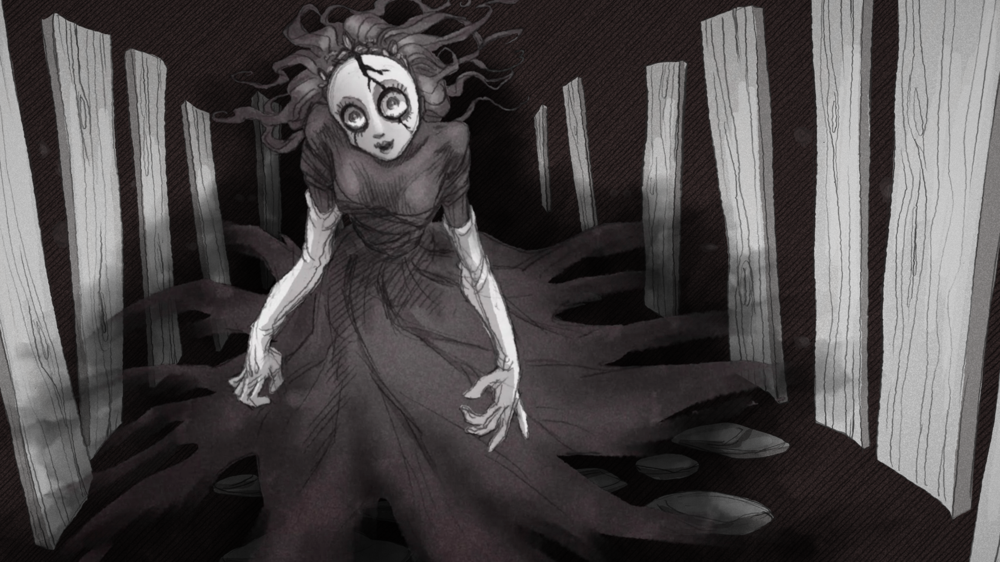
If you leave the Princess locked in the basement and leave, she kills LQ and tries to leave by herself. She finds out that it's impossible, and reincarnates into The Nightmare. This version doesn't care about negotiation. She threates, intimidates, and browbeats LQ until he agrees to let her out.A friend told me that bad memory never stopped him from lying. You don't need to remember the full timeline of all the lies if you have a self-consistent false world model that you can reference. Instead of remembering what you said, you can query your brain for "what would I have said?". Unfortunately, this method doesn't work very well for me either. The answer to "what would I say/do" is different depending on what state of consciousness I am in at the moment. Even when I keep track of what I said to whom, I often can't understand why I said a thing, what was the thought process behind my words?
Reading other people's experience with dissociative disorders helped me realize that a lot of the habits I use to maintain consistency are also a form of masking. As with any masking, it doesn't take a lot of negative reinforcement for a child's brain to make it second nature. I remember, for example, how in elementary school the teacher teased me about how I'm friendly with a boy who used to be my mortal enemy for the last year. Presumably this happened often enough for me to learn that society demands consistency in behavior. Not having a natural intuitive identity, I jury-rigged one with duct tape and prayer22 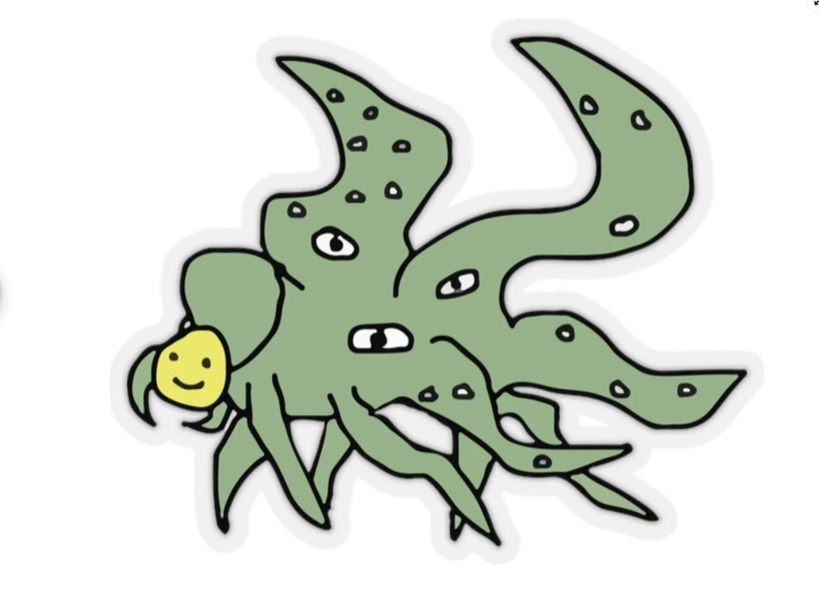
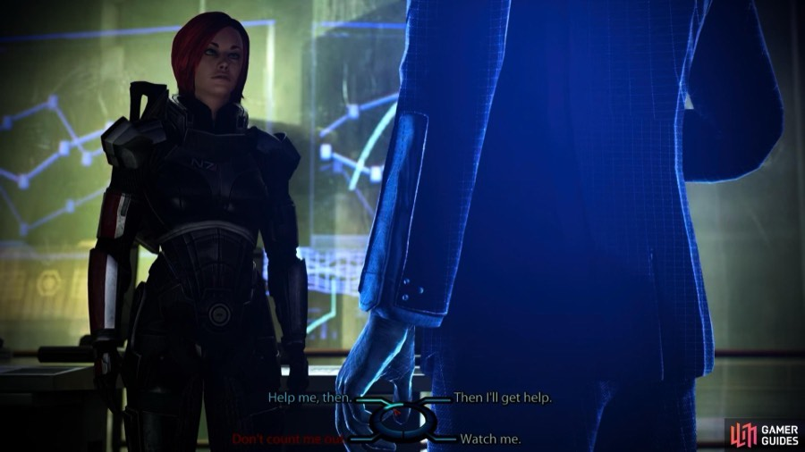
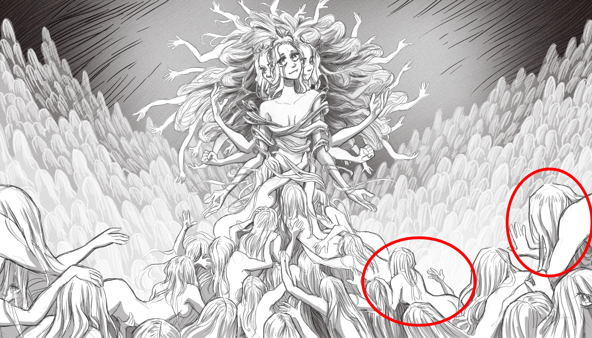
These two girls have contradictory opinions. So what?
Just as any masking, it drains spoons and contributes to burnout. But this mask also sabotaged me directly, restricting my options. Instead of doing what I actually like, what I actually need, what feels natural – even if it's different from yesterday! – I put on an act. "I won't take Fireball, I'm roleplaying as a frost mage". Presumably to unmask, I need to let myself be inconsistent and contradictory, and listen more to my moment-to-moment impulses and urges. Do I contradict myself? Very well then I contradict myself, I am large, I contain multitudes. I am a riddle inside a mystery wrapped in an enigma, that's what the doctor said. You can't enter the same Solar Princess twice. Fuck off.
After Timujin left, I noticed that I don't vibe with him anymore. I felt so different that I couldn't roleplay that character. I was no longer INTJ! And all my friends went their own ways and left me alone. It was unclear what's the cause and what's the effect; but it hurt either way.
When a psychologict asked child-me what precisely I wanted from other people, I said "get help", not really understanding my social needs. In this age, I could operationalize it better. I wanted to have an open conversation. In the most literal sense, I had plenty of social interactions, but they were all context-restrained and utilitarian. I talked to my students about classes. I talked to my doctors about health. I talked to fellow players about the game we were playing. It never happened that I was playing with someone, and the conversation went somewhere else and we learned more about each other. When the context of the conversation ended, the interlocutors disappeared from my life. I wanted to learn how to steer the conversation outside of the narrow context and talk to people-as-people, not to people-as-roles. I had the Mafia – players who loved my games and played them a lot. But it was never a "community" per se. Hardly ever we talked about something other than games. I barely knew them personally. Nobody talked off-topic, nobody shared memes. One time, when we met IRL, Timujin managed to seduce a Mafia girl, but she left, and I didn't know how to do it again. And nevertheless, this non-community was the only one I knew, and I sort of assumed that it's how all communities work. In a future chapter there's going to be a rude awakening when I first get into a real group, but for now those were the limits of my world.
I remembered that Timujin did on occasion leave the context and talk to people personally. So I tried to repeat what was "proven to work" and put on the Timujin mask consciously, talk to people as Timujin and meet people as Timujin. But it didn't work very well. Partly because the mask didn't fit, and partly because of the flashbacks. I didn't get the necessary social fuel from those interactions, but I got to behold the world outside of the oubliette. I saw people become friends after a game, and I raged. How do they do it? How come when I play with someone, we stop our aquiaintance when the game ends? I faced failure after failure, but I didn't know what I was doing wrong and how to fix it. I tried to rekindle relationships with my old friends. I tried to find new ones. I tried to get to know the Mafiosos. I joined a martial arts club and tried to befriend people there. I tried to annoy people on the street. I tried online dating. I tried to be more aggressive and spam DMs; I tried to be less aggressive and passively signal that I was open to chat. Nothing worked. Okay, I thought, I have no social skills, but the catch 22 of social skills is that you can't learn them alone from a book. And even books on social skills were depressing – many authors used something that I would see as an absolute win as a starting point of a lonely shut-in.
Redditor Icy _Palpitation _2733 explained very well how cPTSD loneliness works:
I think because we grew up with no support system, no inherent sense of self so when we do rarely trust and project those needs onto someone and they are in our lives for a bit, it numbs the crushing sense of loneliness.
And people dont usually get it because no one is truly that lonely. Everyone has someone, a parent, sibling, aunt, etc. My cptsd isolated me so m[u]ch from everyone that I could go months not talking to anyone and people would not notice it.
And trying to get to know people takes time. And because we crave that intimacy with someone, anyone to just hold a genuine conversation, we find ourselves having difficulty to get over it. Especially if let's say a breakup they have a mom, a friend, they go out, they meet someone else, are learning and growing, moving on just comes naturally. Where I am lonely, isolated, touch starved, have alot of anger and barely talking to a human living being.
I dont know if anyone else gets this.
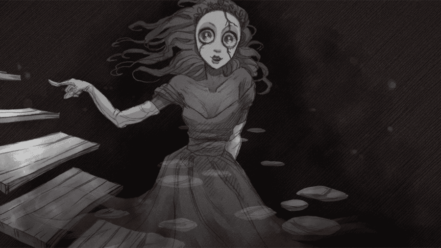
I tried to leave while you suffocated, but that stupid cabin woudn't let me. I don't think I can leave without you.Emphasis mine – no inherent sense of self. Humans, being social creatures, all construct their identites relative to other people; "sense of self" is fundamentally an interpersonal phenomenon. In childhood, those "other people" are normally the parents, and if everything goes well, the child gets enough love in their first years to form a stable sense of self that can then keep existing independently of what other people think. All the other social connections build around that identity.
I was always confused by the concept of "unconditional love". How is it possible to love only some people unconditionally? I demagogued a psychologist about that once. Would your mother still love you if you were Hitler? Literal Hitler, if instead of you, it was Hitler sitting here in this armchair? No? Okay, so there is at least one condition to her love: that you are not Hitler. Now that we've determined that it's conditional, we can bargain about the specific conditions23the fact that I wasn't diagnosed with autism right there and then speaks to the incompetence.
I only understood the actual point of this recently, when I studied childhood trauma. Turns out that it's defined relative to the "consumer" of the love, not to the "supplier". Unconditional support is critically important for early development. No matter what the baby does, it should get positive reinforcement. Praises and hugs for everything. It must marinate in an environment where it's impossible to commit a mistake, where every action is right, every drawing is a masterpiece, nothing is punished and failure is impossible. This allows the baby to develop internal motivation and a stable self-concept. It's the "secret ingredient" of identity development.
DID implies that something interrupted this process. The child had to engage with the world and face the possibility of failure too early. In a harsh world that doesn't shower them with unconditional love and reward, the child has to "improvise", stitching identities haphazardly depending on the problem at hand. Wearing masks while lacking a face. Thus are Shifting Mounds born. In "Complex PTSD: From Surviving to Thriving" the author repeatedly emphasizes that the single best thing you can do to heal is to surround yourself with people who can give you unconditional positive reinforcement.
I've been in a discussion recently about the dm.am short story contest, and a guy threw shade at writers who can't take criticism without melting down. He said that they need to be "toughened up" by harsh criticism until they learn to take it in stride. This faux pop psychology enraged me. It's literally the other way around! If someone is triggered by criticism, then they need unconditional positive reinforcement! Their psyche must feel safe, they must internalize that they can write anything they want and commit as many mistakes as they like and not risk getting shit on! That would let the sympathetic nervous system know that readers are not dangerous and there is no need to kick into gear when they start talking. Only after that they can learn to take criticism and grow as a writer. Mental resilience can only develop in safe spaces for fucks sake!
I clearly lacked unconditional love. Too early in my life had I been in places where I could get punished for mistakes. Father kicking me into a wall if nothing else, but I was out of my depth with other children, too. So I never developed the capacity for internal motivation, and my psyche was in survival mode 24/7. I am exclusively driven by external motivation, by avoiding problems, dangers, or pain. I am the opposite of an autotelic personality, an entity incapable of true desire.
Social isolation turns brain into mush. This applies to everyone, not just reverse solipsists, but we also get dissociation to go with it. I grew dumber. I felt my brain drying out. It was enraging, but I didn't know what was going on. Lack of eyeballs to pin down my form, and lack of friends to work out negative emotions, ensured that every bad feeling got stuck in the ANS. Inability to process failures basically deprived me of the ability to learn from mistakes. Every time I make a mistake, I either dissociate from it, forget, and therefore make it again; or it becomes a trigger, and every time I try again, I flashback to the mistake and ruin everything. This distinctly felt like a curse, and I even called it a curse. To always lose, whatever I attempt. Many minor and seemingly innocuous things that happened in this chapter can trigger me now. I may freeze when I see end credits in a video game, or when I visit a large public Discord server, or when I hear about any of my friends doing drugs, or when I read a word relating to time24like "recently" or "forever". It grew into learned helplessness – why do anything, if I only make everything worse? How is doing anything at all better than just lying on a bed in a dark room and not moving a muscle? Depression is often just a globalized freeze reflex – lie down and give up about life in general.
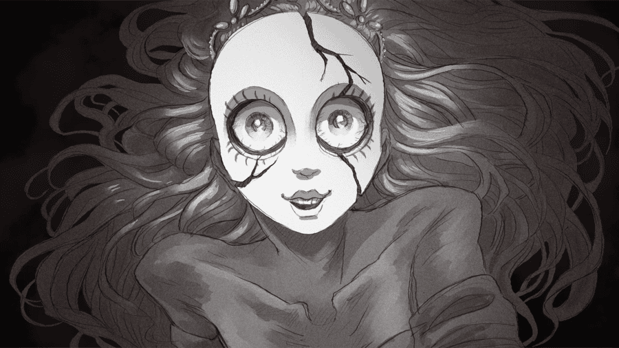
The Nightmare wears a mask. Under it – eternal cycles of suffering and helplessness.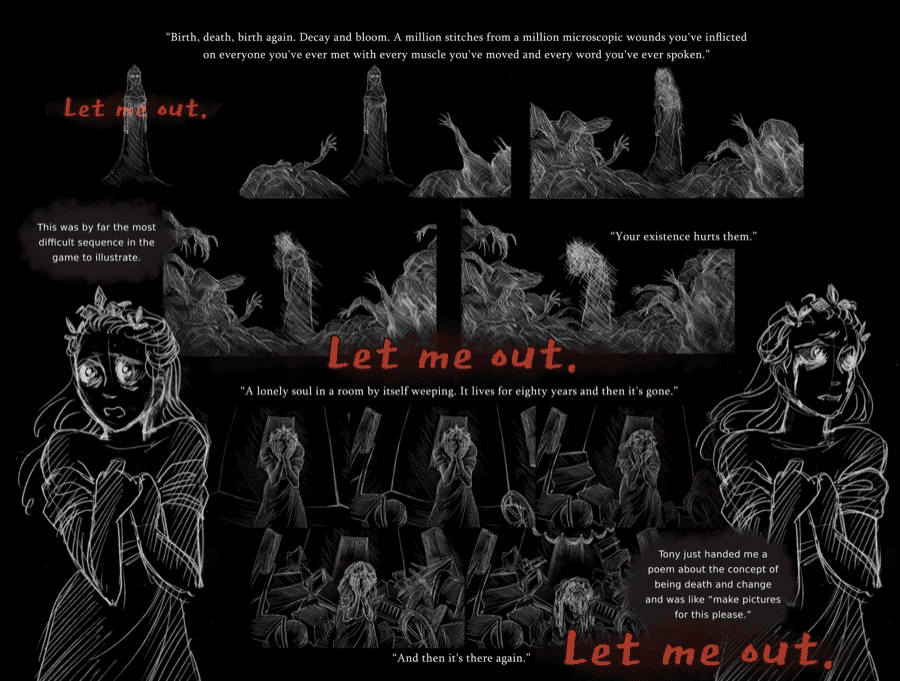
LET ME OUT!I remembered cartoons like Tom & Jerry, Woody Woodpecker, or Wile E. Coyote and the Road Runner. They were my first childhood experience with the existential horror genre. The villain keeps trying to win, time after time, looking at the problem from so many angles, being clever, resourceful, determined and hard-working. But he still loses. Often due to no fault of his own. Sometimes because a tiny coincidence ruined everything. But he loses, always. Just as a basic axiom of the narrative, he is doomed to lose everything, and suffer while doing it, and become a laughing stock for it, and there is nothing he can ever do about it. That's what this chapter felt like. Even my nightmares followed the Looney Tunes narrative formula, except they weren't funny. Unsatisfied emotional needs locked me in an endless loop of failure.
The coyote curse reached its acme during the Gloomaven Incident. Gloomhaven is a massive tabletop game, intended to be played over dozens of sessions in an epic campaign. My old friend from college mentioned that he wanted to play it, but he couldn't find a group. I couldn't not grab this opportunity. A lengthy activity that repeatedly puts me in the same room as my friends? That sounded like the perfect attack plan! I was in. I found other people who were interested and created a group chat. I bought the game. The friend told me to buy an addon, too, so we have more content to play with, so I bought the full version. I found a place, I coordinated the time, we got together, poured tea, figure out the rules, started playing…
…and then we found out that one crucial piece – the map of the first level – was missing. I sent an email to the store and they said that yes, sometimes a piece is missing, this happens, we'd order it and you can take it from the store for free. The session was ruined, we played something else we had on hand, drank our tea and went home. It took three months for the piece to arrive. During that time I tried to start a free-form conversation in that group chat or share memes, but they mostly ignored me. When I got the piece, I tried to organize a second attempt, but it kept falling through – one person couldn't make it, then another, then it seemed like we'd finally agreed on a time, only for an accident to happen out of nowhere. After several months I explicitly complained that we can't get around to play and maybe we should do something about it. They said that they're adults now, and nobody has the time to take on such a huge time commitment.
It was my most promising plot. They said themselves that they wanted to play. I paid for everything, I organized everything, I did the preparations, the only thing they needed to do is to come and play. Those weren't some randos, they were my friends who liked me and helped me get through college and visited me in the hospital. And yet it failed. A piece was missing. Make new friends but keep the old my ass.
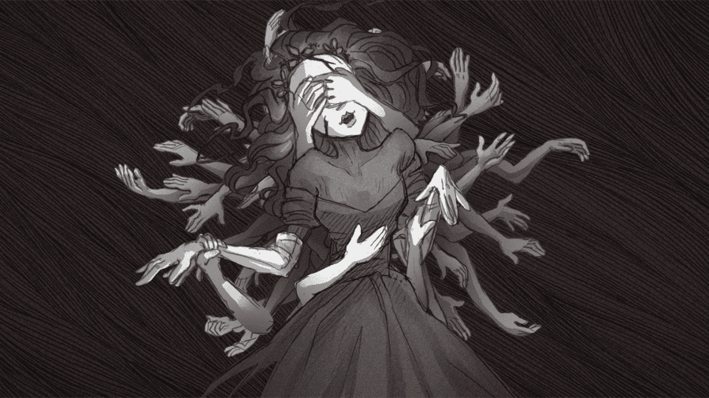
Chapter 5. The Wraith
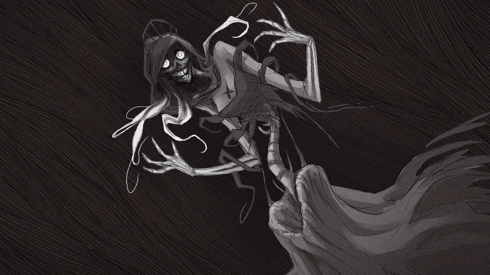
The problem of social skills is that you can't develop them alone. Especially if you're an undiagnosed autistic with no stable identity, and the only chapter of your life when you had real socialization, you mostly remember through written notes. I don't understand intuitively how communication works. I can only imitate.
And others rarely cooperate. When I directly ask for advice or help with my socializing, they tend to see it as reproach or hostility. When I ask something like "John asked a question and you all answered right away, and then I asked a question and you ignore me, why is that", they say "nobody is obligated to heed your every call, the world doesn't revolve around you". Which is literally true in a sense, but it doesn't really explain anything. When I lose track of the conversation or just don't know what people are talking about, I try to clarify, but instead of real answers I get ironic jokes and witty remarks. And even when I hear something that sounds like a real answer, I can never be sure it wasn't a joke. It happened more than once, when I believed a plausible-sounding answer, but it turned out to be sarcasm. For my college friends, I developed techniques and procedures to ask questions or request help in a way that actually gets me what I wanted. But a) those techniques are too idiosyncratic to STEM college culture and don't generalize and b) I never wrote them down, and Timujin's procedural memory was too spotty to reproduce them.
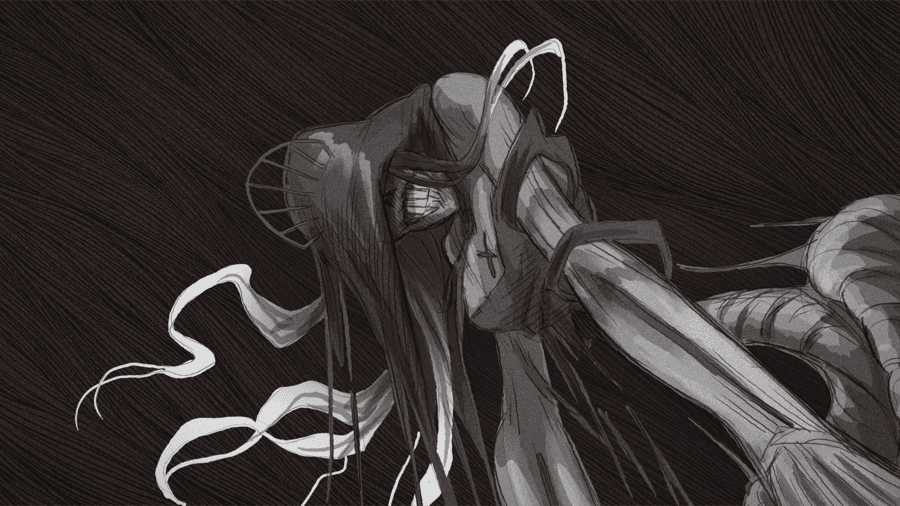
If LQ kills The Nightmare, she reincarnates as The Wraith. This time it doesn't expect any cooperation or copromise. She just takes over his body and leaves.The only consistenly effective method was to freak out. Start swearing, insulting, shouting, shaking fists (if IRL) or spamming in all caps (if online). It works, people snap out of their playful-patronizing demeanor, stop clowning and actually tell me what I wanted to hear all along. But the problem of this approach is that it only works once. It solves this social encounter, but it ruins the future relationship. That's no way of making friends. So the only social skill I ended up actually good at was the Columbo method. Getting my answers using careful observation, subtle provocations, pointed questions that needle people just the right way, under the guise of faux naiveté, without ever asking directly or revealing my actual agenda. It worked, but it needed uninterrupted focus and was very exhausting. I underestimated the extent to which my social skills hinged on the physical. To not be ignored, I relied on raising my voice, getting in people's faces, separating them from the group, and betting on the implied threat of violence. When I moved most of my social interactions online, my core strategy stopped working. I became a ghost, invisible, inaudible, ignored by all.
On dm.am, I got wind of an "offtop channel" in the admin server. Allegedly, they'd just discussed some topic there, that didn't have anything to do with moderating the site. This piqued my interest – a channel for free-form discussions sounded like a thing I needed. I Columboed that many spaces have "offtop channels"; pretty much everyone whom I milked for information admitted that they had some kind of private space for free-form discussions, meme sharing, and looking for a group to play with. And they often discuss general life topics, hobbies, or politics. I wanted to get into one of those, but every time I asked about it, they gave me all the regular unhelpful answers. (The most concrete answer was "they're on Discord")
My current chosen name is Eva. My ex-collegemate remarked on how funny it was that I named myself after a cryptographic stock character. I didn't intend that connotation, but it fits. Eva, meaning "eavesdropper", is a passive attacker who can read the conversation but can't participate in it. I observed other people socializing, I tried to understand how it works and how I could get the same results. But I could never join – the invisible walls of the basement didn't let me.
After the Gloomhaven Incident, I felt like I had nothing to lose. My closest and oldest friends told me to fuck off. I stopped trying to befriend anyone. I stalked people, both online and IRL. I annoyed people in DMs. People who shared a space with The Wraith remember me being extremely toxic. After all, if nobody wants to play nice with me, why should I play nice with them? If "nobody is obligated", then I also don't owe anyone anything, do I? I don't have to hold back if I feel like bashing someone's face in, for once? Why do I have to be polite, if people ignore me when I polite? At least when I insult people I can see them getting mad, and I can enjoy a crumb of social interaction. I'd gone mad in other ways, too. I did some unproffessional things to my pupils, and I lost some of them, but I made up for the loss of income with more shoplifting. By that point I found a D&D group that agreed to meet with me IRL. But I never tried to befriend them – after all, I was doomed to fail. Instead I used them as marks to learn about their social lives outside of me. Not only as Columbo, I had other methods. For example, I hid some mirrors and cameras to spy on DM's laptop. If they caught me I would say that I was trying to cheat at the game, but I was actually reading his Discord chats. I also planned to install some spyware on it, but he never left his laptop out of sight for long enough. But then one of the players left the city, we moved the game to Discord, and those plans stopped working.
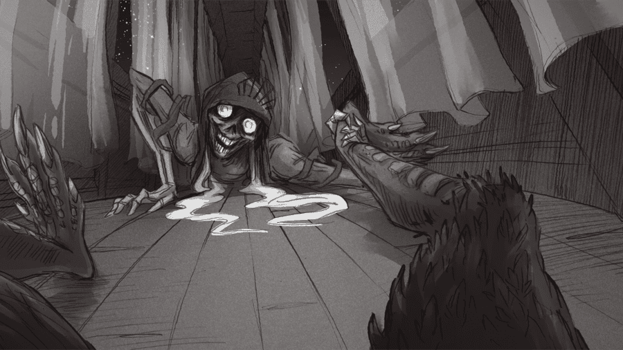
We're way past compromise. You killed me last time. And that was after you tried to lock me away forever. I was so, so close to freedom, but then you took my body away from me. So now I'm going to take yours, and I'm going to walk it out of here. And you! You get to watch me do it! Completely helpless. Just like you left me.
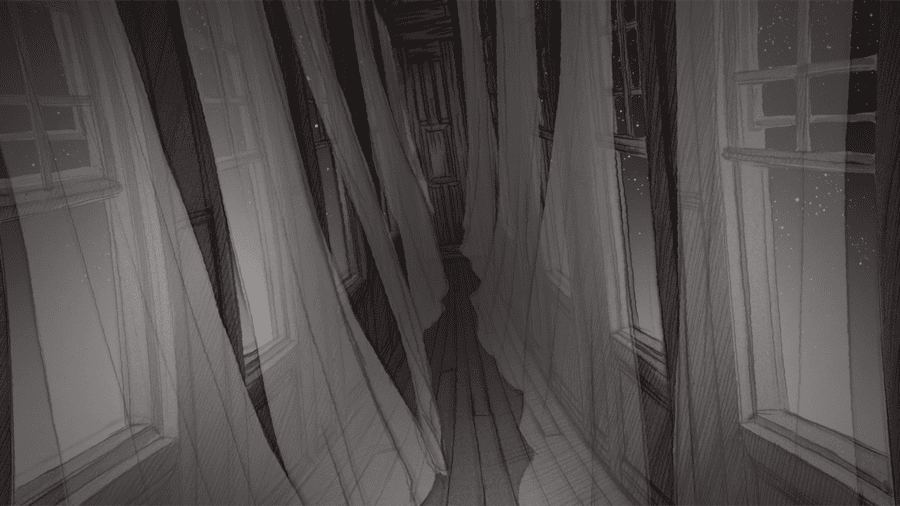
She tries to leave inside LQ's body, but the corridor grows longer with every step. She never moves closer to her goal, no matter how much she tries.It was technically not psychosis, but it was a mental health crisis. I knew I was not thinking straight, and I voluntarily got myself institutionalized twice. Both times they kept me locked up for a week, and let me out with some new medications that didn't actually change anything. I was constantly hyperactivated; either freezing into a deep depression, or ruining everything in rage.
My investigation into other people's social lives "bore fruit". I had a scenic view to the outside of my oubliette. I saw people meeting each other, talking, befriending. I saw them getting into group chats or doing hobbies or visiting each others' houses. I tried to do things that they did, and it never worked. I didn't become better at socializing. I just beheld the enormousness of the gap between me and others. I saw just how much I was missing out on. I realized the tragic extent of my social ineptitude.
So as time went on, I raged less and depressed more. I gave up. It didn't work. Nothing worked. In the last desperate attempt I messaged my closest college friend. I said I was doing really really bad mentally, I really really super urgently need company or someone will die, please please let me come to visit this weekend please. He didn't let me come to visit; he suggested we meet Friday after work. We met in a cafeteria near his job, talked about life for an hour, and went home. He did the minimum, I couldn't judge him. But it didn't help.
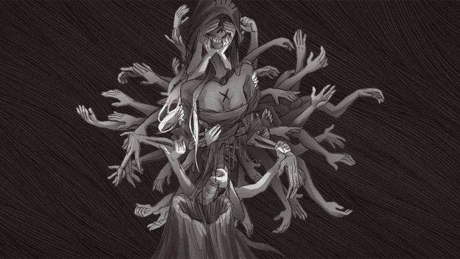
Chapter 6. The Spectre
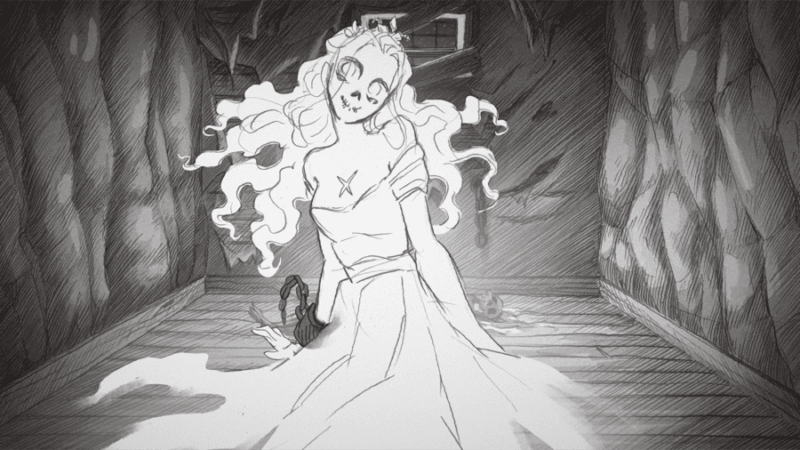
I fell into oblivion. The world disappeared. I barely remember what was going on around me, because I was fully inside an escapist fantasy world, dreaming while awake. The fantasy was more real than reality. Imaginary touches felt stronger than actual touches, imaginary food tasted more delicious than real food. My body was doing the bare survival, while my consciousness was somewhere else.
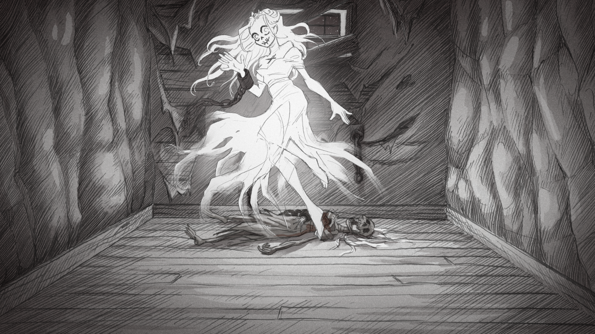
If LQ kills the Princess for real and leaves her corpse in the basement, she reincarnates into The Spectre. She is deeply wounded and betrayed, but she is willing to forgive.I felt worse than ever, and I was getting worse. Over the ten years I tried so many things, but none worked. Therapists and pills didn't work. Inpatient treatment didn't work. I raised the stakes, I tried riskier and riskier solutions, I tried electroconvulsive therapy, psychedelics, experimental internet diets… all failed; often in a maximally kafkaesque Looney Tunes Villain way.
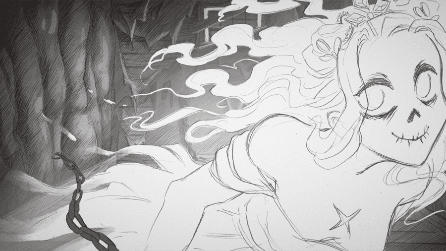
I've tried to leave. Before you came back to me, I explored every inch of this place, even the spaces between the walls. But I never found a way out. I always wound up back here.I had one other risky idea, though. When I studied depression, I noticed that my symptoms didn't look like just depression, I noticed dissociative symptoms as well. I only noticed less than a tenth of the dissociation, because dissociation is so covert a symptom; but it was enough to get my attention. And I had some suspicions about my own transgenderness. And, as I learned, gender dysphoria can cause dissociation. Maybe gender transition could help.
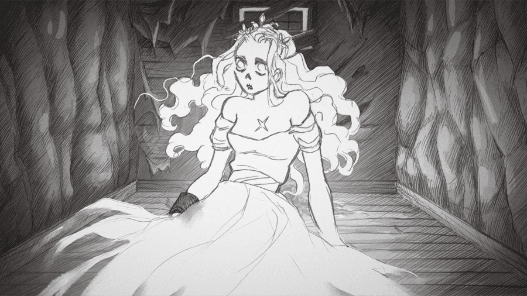
All I know is that there's a hole in my chest, and not the big obvious one that you put there. There's something older and deeper. A nagging reminder that I'm not where I'm supposed to be. I know I have to be... part of the world? But the world isn't here. It should be there. Maybe. There is my home. I don't know where home is. I just know it isn't here. But I can feel it calling to me from some place far away. Wherever I'm supposed to be, it's out there. The world... doesn't matter. All I remember is that I'm supposed to be... there? Not-here?In those escapist fantasies I was a girl. I didn't choose it consciously, that's just what they were, I couldn't change that. And they felt… more than just real. They felt right. When I was in the body, I suffered. When I was in the dream world… I was normal. My head just shut up. My real-world motivation to not commit suicide was fear that something might go wrong and I only make things worse (and the worse I felt, the less I bought that argument). But in the dream world… I felt a glimmer of hope. That maybe if I keep living, it will get better. A feeling that I might have been better. That there is an alternative reality where none of this happened and everything was fine. I never saw the life outside of the basement, but at least now I could imagine it… conceptually… maybe. I wanted to try and see, what if? What's the worst that can happen?
«A person cannot commit suicide if his mind is pure and tranquil. If one leaves this world with a confused and frustrated mind, it is most unlikely that he would be born again in a better condition. Suicide is an unwholesome or unskillful act since it is encouraged by a mind filled with greed, hatred and delusion» – Ven. K. Sri Dhammananda
Buddhism opposes suicide on the grounds that the state of your mind at the moment of death is the primary determinant of your further karmic destiny. So if you killed youself due to depression, fear, or something else unwholesome, this is what you're stuck with in the next life. Essentially you're taking the worst moment of your life and stretching it to a lifetime. After my train experience I wondered what lamas would say about the fact that right before the train hit, I felt calm and peaceful. If I died then, would that be fine for my karma? If the decision to kill yourself was made not under strong emotions, but rationally, with full understanding and acceptance – would that be fine? I existed in two parallel states. Half of me was in depths of despair, and the other half in compassionate tranquility. The body was saying "I suffered, so let everybody else suffer", and The Spectre was firmly and passionately on the side of "let nobody suffer". The only unwholesome feeling was… some kind of uncanny nostalgia? For times that never were, but could have been? What then? Would The Spectre go there, would Timujin go to a hell realm?
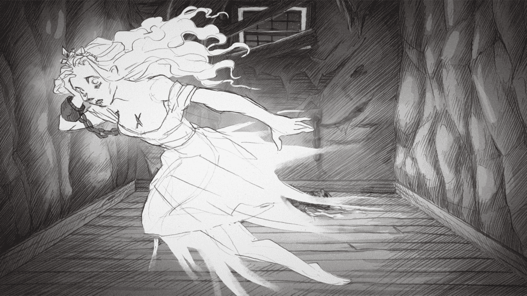
(if you leave her in the basement)You're... you're... abandoning me here?! After everything you've done to me, you've chosen to do more?! But if you're just leaving me then... then I'm really just going to be stuck here forever. Th-there is nothing I can do, it's just going to go on and and on and on, lonely and sad and hurting and empty. NNNNNO... NOT THAT!
I first suggested my transgenderness to my doctor soon after the train incident. She said to put a pin in that and worry about more immediate problems for now. Stabilize first, figure out your gender later. After a year I raised that question again. I had a different doctor, and he shouted at me that transgender isn't a real thing and I should just forget about it. By that time the Russian government began cracking down on LGBT, so I decided to suspend that idea for the time being. The more other plans failed, the more transition looked like a good option. I had left plenty of foreshadowing. By the coming of The Spectre, I had already been playing Mafias as The Solar Princess for three years. I had scouted my friends' opinion on LGBT and dropped some hints about it. During that last meeting in the cafeteria, I came out to my college friend to his mostly apathetic reaction. But all of this was just me opening the new strategic option, and a just-in-case way for me to prove that it wasn't a spontaneous decision. I wasn't confident I was actually trans. But The Spectre had fewer doubts. I truly felt very different in the imaginary female form. This was something I could present to a doctor – I found a trans friendly one who wouldn't say that it's not a thing. I told her about all of this, and got my diagnosis and an endocrinologist referral25yes, it was really that easy in Russia at the time. That didn't last long. The diagnostic certificate in hand, I came out.
The arrival of The Solar Princess was sudden. There were omens and portents, of course. I came out to a few people whom I predicted to be the least bigoted. I was right, and I got affirmation and support. This gave me courage to come out to more people, and then publcly. I followed The Wraith's playbook of social skills – be aggressive and toxic and antagonize everybody. I didn't owe anyone anything, I had nothing to lose, and I had no realtionships I could ruin. I talked sarcastic, ironic, and patronizing, because why not. I was ready to throw hands. And of course I was going to use this unique opportunity to break through the wall of ignoring and force people to pay attention to me. It really was much easier to act from a female persona, I didn't have to fight my own head so much, and I felt no pressure to maintain consistency with the Timujin persona. So I had more than enough energy to keep fighting, and whenever anything went wrong, I doubled down instead of freezing.
And it worked.
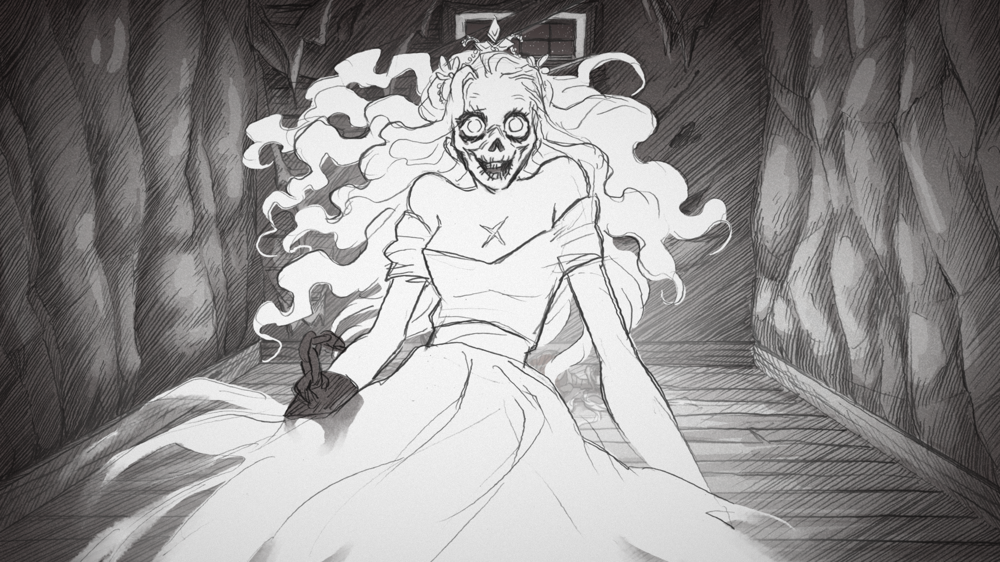
She wants to forgive LQ. She wants him to help her, and she's ready to negotiate and find common ground. But sometimes the anger shows up for a second. The wound is deep, and not easily forgotten. After all. You owe me.People's reactions were way more positive than I expected. Most people switched to the correct pronouns right away. Some people talked shit about me, but then others started talking shit about them; open transphobes were losing their social status and had to get in line. They invited me to Discord servers, where they talked to me, asked me about how transgenderness works, argued with me. One transphobe went against the entire website, threatening to report me to the police for LGBT propaganda, and a whole entourage of defenders rallied around me, de-anonymised and publicly humiliated him, and got him perma-banned. I got DMs from people interested in the topic; from other LGBTs of the community who were still in the closet; and from many randos for miscellaneous reasons. The community saw me as simultaneously a witch hunt victim casually shrugging off mass harrassment, and as a noble paragon of truth and justice for the oppressed.
I had so many eyeballs on me. Objectively more than ever before in my life. Compared to the invisible, attention-starved and therefore barely existing Spectre, it was a massive surge of reality. I woke up one day and realized that, for the first time in my life, I exist.
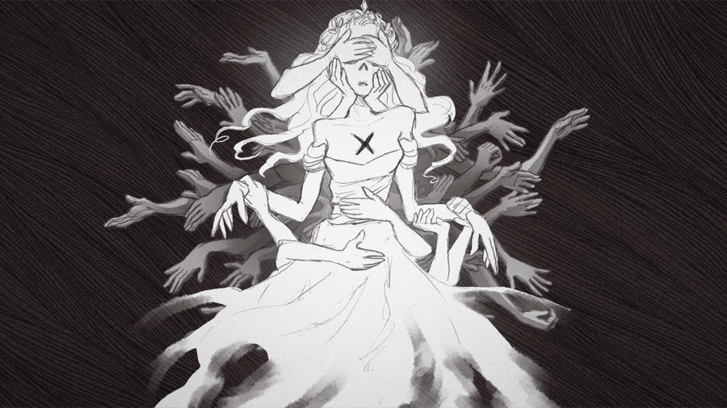
Chapter 7. The Tower
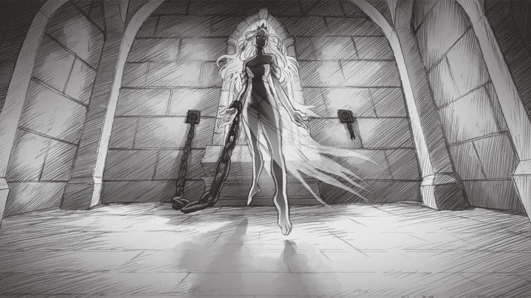
I exist.
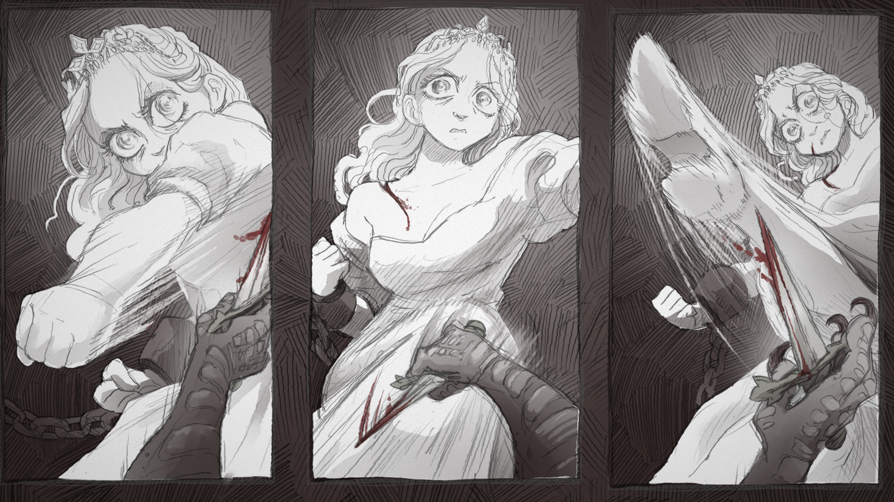
If LQ tries to slay the Princess, but loses miserably in combat, she reincarnates into The Tower – a powefull goddess who can not be denied.I no longer needed to struggle against a constant hodgepodge of thoughts in my head. I no longer lived on autopilot, barely perceiving enough to walk upright. I was at the helm. I no longer needed to persuade my brain to let me do something through three layers of indirection, I could just do things. Ugh fields no longer kept me away from anything. No thoughts needed to be neutralized. My sleep problems were gone; I could hit the pillow and wake up 7.5 hours later fresh and ready to take on the day. The world became sharp, tangible, real. The Matrix as a trans allegory started making sense: I did feel like I was living in a fake reality all this time, and just woke up. The proverbial "splinter in your mind driving you mad" was gone. I felt better and freer than ever. Other people noticed it, I "bloomed". When I entered my psychiatrist's office for an appointment, I barely stepped in, didn't say a word, and she already wondered why I'm so suspiciously happy today, what happened? Later I referred to this transformation as "henshin" – no better word to describe it.
I felt better than ever before in my life. When I first considered coming out, I was afraid of the impostor syndrome, that it would feel wrong to don a feminine identity, but it never happened. Acting and talking as a woman felt easy and comfortable and natural, even before anything changed in my body or appearance. It was when I had to refer to myself in masculine that felt like pretending. And people truly treated The Solar Princess better than Timujin. Partially because those who did otherwise didn't live to tell the tale, but also just because girl. Ever people who didn't know me were warmer to female presentation than to male one. There was a famous Tumblr post about a trans guy who described how the society treats them differently as a man. For men, the entire society feels colder and harsher. The feeling of social isolation and emotional malnutrition is much more common for men than for women, and those who went through both can confirm. I can confirm it from the other side, having spent most of my life in cold masculinity and now seeing the alternative. Of course there are plenty of downsides on this side, too, but I feel truly sorry for the men. The male loneliness epidemic is real and we need to do something about it.
(that something is destroying the patriarchy, of course)
My operative goal was to "hold free-form conversations", and now I had more of it than I could ever want. People invited me to chat rooms. My entourage of defenders grew into the Solar Empire community, and I had my first real online friendships there. For the first time in my life, I could talk about my problems, and have people hear me out, and express sympathy, rather than ignoring me, or using it as ammunition to hurt me later. For the first time in my life I could warn people about a trigger and expect everyone to actually stop triggering me, rather than doing it even more because it's funny/nobody is obligated/the world doesn't revolve. I could ask and receive advice; I could share a meme and get a reaction; I could joke and hear laughter; I didn't need hard leverage to start a conversation; people did really want to talk to me, voluntarily. I ramped up my agressiveness tenfold, and the wall of isolation finally fell.
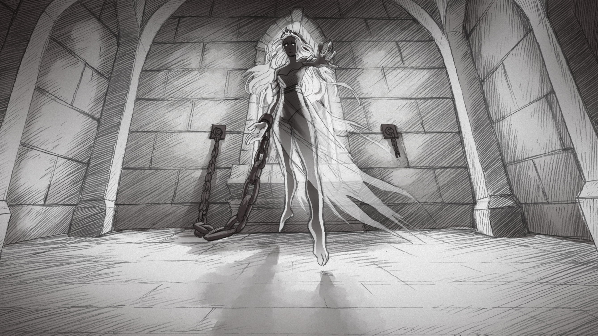
My little bird has returned to me. I wonder what he wants. Kneel!All the brain drain went away. When my intellect was at its nadir, somewhere around The Nightmare, I played a puzzle game Baba Is You. The puzzles were hard, and I could barely progress, sometimes looking up solutions on youtube when it got too difficult. In the end I dropped it closer to the beginning. Recently I played it again. The levels where I used to get stuck – and then just as many more after that – I got through without even thinking about it. They felt "tutorial" difficulty; I spent more time clicking than I did thinking. The first level that actually had me stop and think, The Wraith couldn't even unlock. The IQ gap between me-then and me-now is colossal. I'm not sure if me-now is stupider than The Tower; but the delta between me and The Tower needs rigorous measurement; and the delta between me and The Nightmare is obvious to the interocular traumatic test. I suspected that my cognitive decline was head trauma, or side-effects of antipsychotics, or chronic sleep deprivation. But this henshin debunked all the "organic" hypotheses in one sweep. Nothing changed organically. I didn't change my medication regimen, I didn't start hormones yet, I didn't change my diet. I just removed the mask; this purely social experience did more to my mental health that all the pills, therapies, and lifestyle interventions put together. This was my prompt to shift my psychiatry studies from pharmacology to psychology, which was 100% the right decision and helped me find answers to many mysteries.
I had dissociative disorders on my radar before. I knew that I was dissociating. But I thought those were secondary symptoms. Yes, sometimes I feel that the world is not real, sometimes I go on autopilot, but it's probably downstream of depression. But I only thought that because I never knew what it was like to not dissociate. What I thought was "not dissociating" was actually "dissociating less than usual". I was objectively deeper into The Matrix than most people, and I only realized that once I glimpsed outside.
Many of my symptoms became clearer. Every disorder is a spectrum, but the layout of the dissociative spectrum is kind of unintuitive. Depression goes like "feeling down -> deep sadness -> can't get out of bed", which makes sense, stronger symptoms do look like extrapolation of weaker symptoms. The dissociative spectrum is "world doesn't feel real -> amnesia -> multiple personalities" which is… less intuitively obvious. To understand how the symptoms are connected, and to find myself on the spectrum, I needed to visit two remote points on it. Now I understand it, and the pieces are coming together. Since then my level of dissociation went up and down, but it never dipped to the level of The Spectre. At the very least, my memory of everything that happened since The Tower is continous. I still keep notes, but they don't tell me anything I didn't know. The female identity fits the specs of my psyche way better.
Do you think holding shut your beak is enough to stop me from prying it open? Do you think your skull can stop your thoughts from being seen? To defy me is to claim we stand on level ground. We do not. You are quiet shadow, while I am brilliant radiance.
A shriveling little worm stretched beyond its limits, trying to control things it can't understand.
It was very encouraging, to see that partial transition was so good for my brain. If now, at the first step of my trans journey, my power level spiked so much, then what awaits me in the future? Maybe if I transition all the way, I can finally leave this damned basement! I was ready to move forward full speed and disable all power limiters.
…I failed to consider that those limiters were there for a reason. Dissociation is a defence mechanism. Yes, it's terrible, it debuffs you across the board, and yes, this deep on the spectrum it's a cure worse than the disease. But it also keeps the trauma locked down. And if you unseal the demons before you're ready to face them, you're going to get gored. Trans health resources warn about this, but in my hubris I didn't heed the warnings. A containment breach was nigh.
The Prisoner thought herself to be an unemotional person, difficult to offend. She didn't feel the need to moderate her speech, she didn't think politeness was necessary, and she didn't care about being insulted. She preferred no-holds-barred conversations, where she can say anything and they can say anything, she even reposted Crocker's rules to her socials. Me and my second girlfriend were on the same wavelength about this – we didn't bother to be nice to each other, and we never took it personally. The basis of this impenetratable emotional armor was, of course, dissociation. I did take all the psychic damage, I just never noticed it consciously, same as I never noticed exhaustion. Timujin was doing fine. The rest of the Mound had to bear the consequences.
I wonder if it was the same for her?
The Cage had to rethink this. She felt the negative emotions when conversations went wrong. But I didn't fully understand what was going on, because I was triggered less by normal offences like insults, and more by non sequiturs like being told how well someone's weekends went. I didn't have the concepts of "triggers" and "flashbacks" in my mental toolset, so I never figured out that I needed to moderate my social life for very specific and unusual requirements for it to be comfortable. In my mind, the fact that I suddenly felt sad when reminded about some topic was my personal problem and no reason to tone police others.
Of course, being that unfazed is not a real thing. Humans are social and emotional animals; social mistreatment imprints on the psyche one way or another. If someone acts or talks like he doesn't care about being insulted – especially if it goes like "I've been through worse, this doesn't mean anything to me" – then you can bet that he's just good at dissociating. If a human goes through social stress and ends up "more resilient" – that's 100% dissociation. The psychic damage still applies, it's just that he doesn't see his own HP bar. He doesn't stop reacting emotionally. He just doesn't feel those emotions consciosuly, so he rationalizes his emotional reactions post-factum as being rational and logical. He keeps suffering the symptoms of the feeling-kinda-bad-disorder, but he can't connect the dots between that and social stress – the association is severed. When I talked to my mother about my past, she wondered, how is it that there's so many things that can damage the psyche, but most people aren't psychos. The correct answer is "how do you know?" Dissociation is literally all about concealing the symptoms from yourself and others. It happens a lot, that one "goes through the looking glass", and all the pathological trauma responses turn into ego-syntonic personality traits. We don't say "psycho", we say "lazy", or "asshole", or "childish". All while complex trauma is a major epidemic.
The Tower met a lot of toxicity and bullying. Mostly but not exclusively transphobic – I won't recount it all, but it was the whole package from all sides. It was, of course, unpleasant, but it wasn't triggering in the literal sense of the word. It was just garden variety jerkishness. I didn't have past trauma regarding transgenderness, I had nowhere to flash back to. And all the new social stress, harsh as it was, didn't stick as trauma – because I wasn't alone. Others supported me, stood up for me, expressed compassion. The nervous system could always go back into the green of social engagement just by switching attention. It was new to me, and I got the impression that The Prisoner's playbook of ignoring all social niceties was appropriate. After all, my hyper-aggression bore excellent fruit, and return aggression was reflected tenfold and only cemented my social position as the local LGBT paragon.
Unfortunately, just because my opponents didn't know my weak spots, didn't mean I had no weak spots. There were still triggers that could still reach me. And nobody could intervene and defend me, because those triggers didn't even look like anything bad, neither to me nor to others. And I didn't have anyone to talk it over with, because I wasn't aware of the source of my emotional reactions. Dissociation protected me from trauma, but also concealed it from me. I was glad it was doing so well, and I tore away seal after seal. The defences were breached, and one day one fatal trigger hit at the heart, releasing all the mental damage I accumulated over the years – all at once.
Chapter 8. The Fury
I had no bird's eye view of my attempts to escape the basement. I sort of "knew" most of the raw facts, and I "remembered" how much I suffered all this time, and I "felt" the emotions, but the dots couldn't connect. Patchworks of memories, now-alien emotions, failed and therefore censored plots – all the puzzle pieces were there, but they were thoughroughly mixed and obfuscated so they would never reach the consciousness; the association never happened. One day, very abruptly, I remembered everything.
If LQ kills The Tower despite everything, she reincarnates into The Fury – wounded, flayed, wearing a dress made of her own skin, her beating heart laid bare upon her chest.

The Tower was the first who managed to break through the wall of isolation and look at the social world. Talk to people, see their perspective on their lives. Not just observe passively with spy devices and Columbo manipulations, but personally go inside the group chats and ask people about their lives and actually get answers. I still didn't know how to touch grass, but I could at least talk to people who did, and ask them how it feels.
The Fury's abode is defiled. It still reminds you of its past glory, but it's cracked, filled with tumors, buzzing with flies.
What I ended up learing is that the gap between me and the grass was way wider than I could ever imagine. That I was not merely a lonely introvert, but a social invalid. That the achievements I saw as epic victories, that I needed month-long plots to pull off, for others were a Tuesday. That the relationships I thought deep and personal, were something that happens between a newly registered account and their teammates. That even those acquaintances who described themselves as "forever alone" had a richer social life than I could dream of. That the difficulties I had, others struggled to see as problems, they're like "what exactly was stopping you from just doing that". Fucking group chats, I knew in theory that they exist, but turns out that sharing memes, arguing politics and laughing at inside jokes are just normal; everybody saw it as strange that I had trouble finding a free discussion space on the internet. It's as if I spent ten years learning to play chess, finally memorized all the rules, went to my first chess contest, and suddenly realized that playing chess was not as simple as knowing all the rules.
See how you've soured my once divine melody! Words are not repentance. Apologies are paid for only in flesh and deed. Let's see how deep we need to dig to find the defiant little spark of your soul. This will hurt you.
Of course, that's selection bias – if I learn all that from talking to people, then I can only see the perspective of people capable of talking to me. Of course – as I learned later – many people are like Timujin, but nobody sees them and nobody knows their problems, just like nobody saw Timujin. Timujin looked way more socially adapted than he was. Partially because deep masking worked, and partially because nobody expected plot twists like "this entire sexual relationship experience doesn't count because amnesia erased it". When I first went to a transgender meetup, I got to know some people who also used to be locked up in their basements, alone, stuck in the cycles of trauma. Many were isolated much deeper than Timujin, and could only now break out. Certainly there are many whom I can't meet. I am socially stunted relative to normies, but I'm far from the worst. The rock bottom is vast yet invisible.
I was angry. I measured IRL relationships against my college friends, and I measured online realtionships against the Mafia community. The college friends went their separate ways; I tried to hold onto those relationships as hard as I could up until the Gloomhaven incident, but I couldn't really blame them for what happened. And in their time, they helped me enough that I could strike them out of the Book of Grudges, if for no other reason than thankfulness. But the Mafiosos? I was enraged at them.
The first group chat the The Tower got into was the private server of the dm.am literary competition. And I was awestruck at how open, friendly, warm and close-knit it was – even in spite of all the transphobia. Other people called it a toxic dump, but I didn't understand why. Until I got into some other spaces, and talked to more people, and realized that yeah, that server objectively wasn't friendly. It was just friendlier than everything I had in my life before. The gap between me and the normies was that vast. Vaster than I could ever imagine.
The Mafia community wasn't friendly to me. We barely talked about anything but the Mafia games themselves. Nobody supported me when I was sad, and nobody was interested in me in any sense other than a game designer and a player. When I made mistakes, they reprimanded me; when I did everything right, they treated that as the norm. When I broke down, they didn't express sympathy, they said "get a grip you wuss". I saw the difference plain as day when people were shit-talking me in the literary chat and in the Mafia chat at the same time. In the literary chat, some people also stood up for me; and in the mafia chat, bystanders just stayed out of it, and I had to defend myself alone. And when I invited a friend from The Solar Empire to help me out, they ridiculed me about how I can't stand on my own and need to summon minions every time the water gets hot.
Which was just about how Timujin would see this situation. But now, in the other chat, people stood up for me by their own volition, without me needing to summon anyone, just because they saw people being jerks towards me. And those weren't even "minions", those were people who met me the day before. They were the better friends.
Yes. YES. See me as I have had to see you! Are you still there? Are you still you?
In retrospect, I should have expected that. The community was shaped and guided by Timujin, he was the main trend-setter, he mended rifts and solved problems. Psychological compatibility with Timujin was a major factor in who stayed and who left. The most socially stunted person on the website was their ringleader. Timujin started all this to have an internet community that he could later turn into a social life, but he didn't have any idea how to build communities, or what a social life looks like. The idea of bulding a close-knit community around a game based on backstabbing and gaslighting each other was kinda dumb to begin with. We even used to have a meta strategy of intentionally triggering people. Some did public sexual harrassment specifically to tilt the opponent and provoke them into making a mistake. Since then we've collectively decided that despite it being quite effective, we shouldn't do it, and Timujin cracked down on people who tried. But it clearly still happened in less overt forms.
All of this created an illusion that Timujin had an actual community and internet friends. I didn't suspect a thing. The project looked successful – I even got a girlfriend out of it! Even though the actual role of Mafia in my life was masking actual problems. "How can I be lonely, if I have so many people talking to me?" Idiot. In actuality, the community was a funhouse mirror of all of Timujin's destructive patterns, that reflected then back onto Timujin himself. He projected his childhood trauma onto this culture – that world is a dangerous place where nobody can be trusted and it's every man for himself. And the community responded in kind, becoming what he saw it to be. Timujin's social development suffered a metaphorical model collapse, an AI trained on its own outputs. Socializing didn't actually happen, he was jerking his own horn and thought he was socializing. His social skills ended up lopsided. Live by the sword, die by the sword.
I thought it might be pleasant to hear you grovel. I thought your misery might bring music back to my ears. But all it does is stoke my hatred of you. All it does is remind me that I was brough low by a sniveling wretch.
I was enraged at those people, and I made it very clear to them. I spent ten years wasting time and brain cells on you, and what did I get in return?! WHAT DO I GET IN RETURN?! ANS was in full fight mode. I hated them. I wanted to physically destroy everyone who was even indirectly involved. Even those who were relatively friendly and supported my transition. Just as a part of a monolithic, blind desire to inflict pain. That made me understand the school shooter mentality – just rain bullets on everyone, I don't care anymore. Since I lacked a way to physically hurt anyone over the internet, I resorted to verbal aggression. A few people left the website forever after a personalized the reason you suck speech. Nobody walked away unscathed.
Years of traumatic memories hit me like a storm, with more intensity than I could process, so I redirected them onto others. When I wasn't destroying the Mafia, I screamed at my friends – one friend in particular had to endure months of trauma dumping and got to know my demons well.
I felt the hurt, too. For the few months that The Tower was at the helm, I had a stable and clear self-image, I saw myself in my mind's eye as a strong and confident woman, and acting as such felt natural and easy. I didn't suffer from constant dissociation – no gaps in memory, no struggling against my own head, so flashbacks, no nightmares. I felt like a weight had been lifted from my shoulders, and I found myself. But as I kept hurting others, this formerly stable identity unraveled. I shifted into the previous forms, and then back. I had classic flashbacks instead of emotional ones, I felt like I was back in the past events. On a few occasions, Timujin took over.
Insomnia and nightmares came back. Just as The Tower was the best chapter in my life, The Fury was definitely the most horrifying. All the pain of the years, at once. And I dumped it onto other people, mostly on that one friend, trying to make them understand what I felt, to feel a fraction of my pain, to show them in full visceral detail the world that I lived in, but couldn't tell anyone until now.
The storm lasted for months, but then it fizzled out. All the demons escaped, and time came to behold the ruins they left behind. I was empty and exhausted. All the futility of my hard work, and all the pointlessness of my attempts to try living, felt fatal. My entire past was a mistake. My friends were worse than enemies. I should have died under that train. Or, better, never chosen to go to college. All of this suffering was for naught. I got nothing in return.
Chapter 9. The Witch
If you come to the Princess without a knife and start freeing her, but then you backstab and kill her, she reincarnates into The Witch.
My nightmares weren't always physical. I didn't just suffer tortures, chases, and doomed melees. Sometimes it was psychological horror, the same story formula over and over. I try to find something, or do something, or escape from somewhere. I do it. I am glad. But then it turns out I got it wrong and I didn't actually succeed. I find the book I was looking for, but turns out it is a different book with a similar cover. I enter the room I wanted, but it's actually a different room with the same furniture. I escape the prison, but it's merely one building of a complex, and there's still a fence with barbed wire between me and freedom. I'm disappointed. I try again, and I fail again. My attempts grow more desperate with every cycle, my failures more embarrassing and convoluted. I can't trust anything that looks like a win, I expect there to always be a catch, an illusion, a deception I fell for. later I adapted this formula for Zacharia's Hell The world around me has some kind of consciousness, like it's run by an evil DM, who sabotages everything I try, and leads me into the most denigrating traps, and I know he's smarter than me, there is nothing I can do to outwit him, he knows all my tricks. Often there are other people, whom I know in real life, who are trapped in the same conundrum, but I can't know if they're really who they say they are, or if they're covert agents of this place, illusions put there specifically to give me hope and then crush it. The vicious cycle tightens, every iteration is shorter than the last, I'm deperately doing the same thing over and over again, because I ran out of ideas, nothing works, I'm tired of trying, but I also can't just do nothing. Then I wake up, and I feel relieved that it was just a dream and my torment is over, but then I find out that I'm still sleeping.
And there you are, one hand tucked behind your back, gripping that sharp, sharp blade no doubt. Okay, I'll play along. What do you want?
«I'm sorry for all of this»
Oh, you're sorry! Isn't that nice! You're such a gracious little monster! If you're sorry then let me out of here. Prove it.
«I feel like you don't like me too much»
Is that a joke? Do you think a joke will charm my trust back? You'll have to try harder than that.
After my rage was over, it turned into desperation and bitterness. This glimmer of hope, this promise of freedom, turned out to be fake, too. The Tower fell, and I'm back in hell. All my past attempts to leave the basement replayed in my head, and all the stupid failures felt like one big curse. There's nothing I can do about the curse, any box can lack a piece. My entire life was the nightmare that tormented me since childhood.
Even if you let The Witch out, she won't come. She will stab LQ in the back, or lock him in the basement, even though she knows it costs her her freedom. The scorpion and the frog.
How does it feel to be locked away and forgotten by the world? Isn't it just awful? You're going to sit down there forever. Languishing. And we both know that you're already scheming about how to get back at me if I ever open this door.
I don't know what real event inspired this pattern – I've been having those nightmares for as long as I remember. Now I know that repeating the traumatic event and ending up in it over and over is very typical for complex trauma. These things become self-fulfilling prophecies that your subconscious will keep repeating. IFS therapy suggests modeling them as independent agents that intervene and sabotage you life; if you have DID, those agents can assume direct control over your body. I have already met one such agent – the voice of my grandfather, who sabotaged cleaning my room, and whom I defeated. But you can bet that my past attempts to leave the basement were sabotaged, too. The Evil DM is real, and it lives in your head as a dissociative shard. One error I've seen from internet sceptics is to reject explanation via "curses" and pawn it off to confirmation bias. It's not that your life keeps repeating the pattern, they say, it's that you interpret neutral events to fit that pattern after the fact. But this is a worse model than "curse". The pattern has real causal potency. "Curse" might sound a bit wooey, but at least it admits that it's a real thing that needs to be accounted for, and that can be lifted. The sceptic model simply rejects the phenomenon and sees it as a statistical artefact, which is wrong.
As much as I hate you, letting you live is in my best interest.
I didn't know the real explanation back then. I just saw the repeated attempts and humiliating failures. I saw that every glimmer of hope turns out to be an illusion, and then comes back to torment me. Every attempt to improve my lot, only buried me deeper. I was cursed. All those years of suffering were in vain. I should have died to the train. Or, knowing that even a direct hit by a train is not enough to kill me, I should have just stayed in my room, refused to leave, and made it my parents' problem.
Even face to face you find a way to stab me in the back! You're just a monster, as I am!
I fundamentally mistrusted the world. Anything can be an illusion, a fake. My new friends may be enemies. Any success may be a false hope. The more I believe it, the more it will hurt when it blows up in my face. I abandoned all my ongoing projects and quarrelled with everyone who I knew. Anyone who tried to be sympathetic got shit on. Many left me forever. I fell back into deep depression, wasting time. Out of two teaching jobs I had, one got me fired for being trans (I worked with children), and the other I just couldn't handle. My plan was to eat through the savings and die.
The plan failed, just like every other plan I had. At the end of the year, I ate half a pack of clozapine. I intended to eat more, I had several boxes of the stuff; but after the first handful I froze with anxiety, tried to force my hand, something distracted me… and I don't remember the details, but I blacked out for more than a day, going through something I can only describe as a "reverse trip".
I wouldn't have done that. Why did you? This is another trick. You are trying to sow doubt. But it's not going to work on me. – if you give The Witch your knife, she is surprized.
I got over it. I didn't hurry with my next attempt, I needed to drop the heat. My biggest fear was that I'd be found and resuscitated, which was way more likely after a recent known attempt. One of the less important motives to find a way to leave Russia was to be far away from everybody who could "save" me, and outside of the jurisdiction of the mental health system that had me on the record. So I kept fighting off my friends as usual. And they – even those who didn't know about my latest attempt – kept being kind. They shrugged off the aggression, and kept talking to me. They finished the game that I dropped out of, and then they invited me into the next one. They listened to my meltdowns. They adapted to my demands, that grew every time, because I couldn't believe there wasn't a catch or a hidden agenda. I sabotaged everything that was good, not to get poisoned by hope. I waited for the other shoe to drop, for the illusion to fall, for the light at the end of the tunnel to turn out to be painted on the wall for me to smash into. I fucked around, and I expected to start finding out. Despite everything I've done to make that happen, it never did. When I fled the country, the same people whom I called traitors and shat on openly, donated me money for the ticket. I didn't know how to conceptualize a world that doesn't punish me for mistakes. My psyche saw – for the first time, in a way that my nerves could understand, not just my reason – a counterexample to the precarious world. The first taste of unconditional positive reinforcement that is so essental for healing.
In my nightmares, there were people who claimed to be my friends, but whom I couldn't trust, and always feared. But they never actually turned out to be agents of the enemy. Perhaps my subconscious was trying to tell me something.
Chapter 10. The Thorn
Attachment theory describes how our relationship with ourselves develops early in life (before 2-3 years) based on a realtionship with an adult – usually a parent. If the child can always rely on support and attention from parents, it forms "secure attachment"; if there was any trouble with obtaining love, it gets one of the "insecure" styles. Internet pop psychology tends to describe attachment styles relative to relationship with other people, typically dating partners. This is part of it, of course, but this is not the whole theory. Relationship with parents determines how the child sees people, including themselves. Their psyche will assume that others treat them in the same way. And that has the power of a self-fulfilling prophecy – the way one behaves provokes others to respond in kind, both by influencing them directly, and by filtering out people who don't fit the pattern. Together with the general human tendency to interpret ambiguous signals in favor of their preconceptions, the more one interacts with people, the more certain he becomes of that pattern, until he ends up in a social bubble where his preconceptions are true. It's not possible to rationally debunk it, because his entire life experience says otherwise.
If LQ gives The Witch the knife, she, of course, kills him. But then she reincarnates into The Thorn.
For things to change, the cycle must be broken from the outside.
Toddler me coudn't rely on my parents' attention and support. It was 50/50 to be hugged, or smashed into the wall. So even later in life, as a schoolchild, I never trusted my parents and saw them as fickle allies. They were obligated to help me because they were my parents, but that was it. I always low-key feared that if I turned out to be too much of a burden or not worth the trouble, I could ruin the relationship and lose whatever support I had. It was easier for me to steal food than to ask my parents for it, because if I'm caught stealing, I would only piss off the victim, whom I didn't care for. But asking my parents for things meant testing the limits of their patience, and that was risky – if I lost their support, it would be over for me. Grandfather realism fit that picture like a glove, forming the notion of The Precarious World, where every man is for himself and you have to play to win. My psyche saw relationships as transactions, I scratch your back, you scratch mine. For someone to talk to me, they need to get something out of it. College friends helped me in later years, because I helped them early on. The Mafia dealt with me because I made games for them. If I have nothing to offer, then I can only coerce or manipulate. One rude awakening that The Fury went through was hearing that my friend was invited to a trip, he refused, and they tried to persuade him to change his mind. What did he offer them, that made them expend effort on getting him on that trip? Did he pay for the entire trip? When I felt like I needed social engagement, I thought about what leverage I had over others, that I could use to make them talk to me. The background assumption was that, by default, nobody would waste time and effort on me of their own volition; I need to compensate people for them to agree to it. And the trauma shaped the world around me, so I really lived in a social bubble that worked like that.
"The stairs to the basement are covered in a fine layer of gritty ash. The air still feels warm, as if the fires that ruined this place had only recently been extinguished, yet fresh shoots of thorny branches are already weaving themselves through the soot-covered earth of the walls around you. Their spines point courteously down towards the basement, so you're able to brush past their jagged points with ease. At least on the way down."
The Tower first saw the world outside of that bubble. I went over to the female, less competitive side of the social world, very abruptly. I didn't have the time to build a new bubble and rebuild/filter my new relationships in my own image. At first I got drunk on my social victories in a machiavellian sense: I entered the local political arena, provoked a scandal as a stepping stone to power, crushed enemies under my boot while playing the victim, and built up a loyal army of minions. It felt like using an unorthodox tactic to cheese out a win, an excellent move in a game of Mafia. But when I saw other people socializing outside of the precarious world paradigm, I realized that this picture didn't really add up. It began falling apart at the seams when I clealry became more trouble than I was worth, but nobody abandoned me. And it collapsed into dust when people who knew me for less than a year poured money into saving my ass.
Insecure attachment damages self-image. The child may think of themselves as an enemy. Hate or despise themselves, be ashamed, self-punish, and believe that they deserve to suffer. They become mostly driven by internal negative motivation, that can often substitute for external one ("I don't deserve, but I must"). But negative motivation generally works worse than positive; in particular, it can't work long-term. If you only learned to do something under threat of punishment, then you would stop doing it once the threat is gone. If the punishment was severe enough to leave a mark on the ANS, then you'd have trouble doing it even if you get internally motivated later. With insecure attachment, the positive motivation is weaker, but the person often basically keeps punishing himself to extend the negative. Internally it feels like application of willpower, and life coach grifters tend to present it as a mark of a strong, disciplined person. But it's corrosive to the psyche. Shame and guilt are the most consistently measurable mind killers, and psychotherapy works in large part by purging them out of your head. Many a path to personal growth began when someone realized that he is not to blame for his problems, and his failures are not because he did something wrong, and the solution is to not be stronger and to not take responsibility for it.
I want to trust you. But you're hiding something, aren't you? Why would you help me if you weren't helping yourself?
My whole life I had nearly no internal positive motivation. I despise the basement, and I want to escape, but I have no idea what's so good about the world beyond it. I do things to avoid punishment from my own psyche. To flee from fear, to quell anxiety, to remedy the feeling of loneliness, to resolve cognitive dissonance, to satisfy envy. All kinds of dukkha. If I free myself from all of that… what's left? I don't know in what way exactly healing is better than death – they both look like nothing, emptiness. Now I'm working with a therapist, searching and purging all the sources of self-torture, freeing up space in my head. There's less and less compulsions and flashbacks and paranoia and anger and envy and resentment and nightmares and mental cud. More emptiness.
Now I'm finally in a comfort zone of sorts. So I can, in theory, start filling that emptiness with something. As long as I'm safe, as long as I get unconditional love and support, my psyche learns that maybe the world isn't so precarious after all, and I can afford to do something other than survival. I learn to trust people. I learn to not be afraid of making mistakes, and not to feel like I'm obligated to do things. From time to time new memories resurface, things that my psyche deems okay to show me. My previous incarnations establish contact. I learn to rest. After some therapy sessions I felt immense exhaustion, like I ploughed fields for three days straight. I just laid down and rested, and at the end of the day, I rose fresher and lighter than ever. The therapy session wasn't exhausting per se. I've been exhausted all this time. It's just that now I know how to feel it, and I can know when to rest. cPTSD recovery often starts with "collapse" – the moment the nervous system feels safe, it stops ignoring problems and forces the body on the metaphorical hospital bed. Now that my body is no longer burning brain cells for fuel, I slowed down, my energy redirected from survival to recovery. This year of my life is dominated by immense exhaustion. And I notice problems that used to mask all that time. For example, now I sleep well, deep, I'm no longer insomniac, and my nightmares went away. But also, I don't sleep in a 24-hour cycle. My body insists on a longer day, making me fall asleep and wake up a little later every next day. That cleared up a lot of things I've been confused about with respect to my insomnia. In particular, why my insomnia progressively got worse when I had to wake up at the same time every day, and why every solution that required maintaining schedule failed. I had this disorder all my life, it's just that I couldn't notice it because I had so many other problems screwing up my sleep in addition to that. When your sleep latency is 1-5 business days, and you wake up to do compulsions every couple hours, circadian rhytms kinda don't make sense either way. Now I have to build my life around that limitation.
Did you know this was going to happen to me? Are you here to watch me suffer? Are you here to laugh?
Teenagers experiment with their identities, appearances, and subcultures. I missed out on it, and I envied people who "used to be goth at 14" or something. Partially because I didn't want to attract too much attention from my parents; partially because no male identity felt right, and I didn't know that female was an option; and partially because I had no community to act out identities in. Lamenting that skipped period of their lives is common in cPTSD communities, and that essential step towards forming a stable identity is often interrupted by trauma. Apparently to build a new psyche from the ground up, I need to go through it now. I must rest more. I used to force myself to do things – essentially loaning spoons. And now it's payday, and I have to make up for all the times I "used willpower" and "did it scared" and "stopped being lazy" and "applied myself" – before I can afford to do anything truly difficult. I'm lucky that my "collapse" happened when I had someone to catch me. Or, rather, because I had someone to catch me – unconditional help from other people was the signal of safety for my nervous system. Not everyone can afford that luxury. A physical opportunity to rest is something most people don't have, but if you do, you have to take it.
TAKE IT. TAKE IT. TAKE IT. TAKE IT. TAKE IT. TAKE IT. TAKE IT. TAKE IT. TAKE IT. TAKE IT.
I say this with all the love in my heart. Feel the uncertainty, the “badness” of not doing anything, the guilt, the shame, the whatever it is, but for the love of all that’s healthy, TAKE THE REST.
I don’t know what on earth it is. But rest is CRUCIAL. Without it, none of us will EVER heal. I say that with so much fucking love in my heart, and I swear, YOU NEED IT. Even if you think you don’t. Even if you think you’re lazy. Even if you feel guilty for procrastinating. Even if you feel guilty for not being productive. Even if you feel shame for having done nothing. YOU NEED IT.
I’ve been on this healing journey full time for like 6 years. I’ve gone through… less happy things my brain decided to do to me, but I can say for certain, without rest, there will never be recalibration back to “normal”, whatever your current ”normal” is, or whatever “normal” you strive to achieve. Every time you’re triggered, you need a shit ton of rest. Every time you try to heal, you need a shit ton of rest. Every time you think you’re doing nothing, your system is still working in the background and guess what? YOU NEED A SHIT TON OF REST. I’ve rested more in the past 6 years than I have the entire time before it, sometimes with guilt, sometimes so emotionally exhausted, no emotion could penetrate the numbness.
YOU NEED TO REST. Who here knows of an Olympic level sprinter/marathon who’s run nonstop for DECADES? That’s right, NO ONE. We’re a goddamn anomaly of the human species. Everyone else rests DAILY. We… don’t even know what it is TO rest, let alone daily. Nah, even monthly. Or yearly. We’re just clueless honestly.
So take it from someone who’s learned to accept I know Jack shit about this condition, despite how fucking smart and insightful and compassionate I am that I can seem to solve everyone’s social issues except my own. I mean, I knew everything, until I started getting some weird ass symptoms and had to let go of control, and just accept and go along with whatever came. Anywho, long story short:
YOU NEED TO REST.
I don’t care if you‘re not even getting out of bed sometimes. Emotional and mental work is SO MUCH WORK and almost never acknowledged, nor how much it takes out of you to actually do it. Even if you don’t think you’re doing it, if you’re trying to heal, YOU ARE. SO YOU NEED REST.
Functional free time
- You still behave "responsibly": buying groceries, running small errands, cleaning or checking email.
- Mental/psychological load (thinking about what comes next, strategizing).
- You do just enough to move on to the next task/activity.
- You feel productive, but you're not restoring yourself.
- The focus is on getting something done, rather than simply being.
Restorative free time.
- The focus is on simply being, rather than getting something done.
- Time feels unhurried, has no structure, and helps you recover.
- You journal, take walks, meditate, or rest. Actually rest.
- You slow down enough to notice your own thoughts and feelings.
- You intentionally create a home within yourself.
…this calls for a novel kind of despair. Safe space? Resting? In this economy? Internally, I'm the most helpless and vulnerable I'd ever been in my life. Externally, I'm on the run from the police on the other side of a world that is currently on fire, and it gets harder every month. "Good luck with your recovery! Don't forget to attend to all the needs you skipped on in the past! You can't rush the process!" I got the first results from my passive-aggressive search for the meaning of life. I understood the nature of the basement, and I know the route I can take to escape – actually know, not just abstractly assume that I can get there eventually. But the basement goes deeper than I thought. Even if everyone stays on my side until the end, there's no guarantee that it's physically possible to nurse me back to health. Anything can happen that puts me back in danger or stress, and all this lull of passivity will be for naught. And even if I recover, that would be the beginning of my life journey – I won't become happy the moment I leave the basement, I will merely start earning my happiness on the same playing field as everyone else. I'm not sure it was a good idea to provoke the collapse. Maybe I should have finished off what I had left.
Or maybe it's just my psyche mourning. When I was telling people I should have died "back then" (for varying values of "then"), some said that their lives would be worse if I did. And when I hear that, I lament. I keep thinking of the same eternal question. When will I get something in return? I decided to invest into living, when should I expect dividends? When do I get something that's worth going through all this hell for? When do I balance the budget and stop regretting choosing to live on that fateful summer? Even if I put aside the fact that I'm still almost certainly a net negative for the world, I'm just not altruistic enough for that to give me closure. But then I fell into that lament while I was writing about how my psyche rejects everything good. And I realized that, rationally, that was a compliment. Most never hear from multiple people that they changed their lives for the better. Maybe it's a trauma response, and it will shut up in the future. I'm so tired of thinking about it. I want to destroy the world.
Cutting through thorns hurts. She bleeds.
I never thought of my problems as "disabilities". Maybe it's because if I admitted I was disabled, it would demotivate my parents from taking care of the burden; maybe it's because when I said I couldn't do something, my father and grandfather said "you're not disabled so yes you can"; maybe it's just because I lacked the mental health awareness. But just the non-24-hour sleep cycle is a disability, and it's not even in the top 5 of problems that prevent me from functioning. I'm disabled, and I have always been disabled. I never could function the same way as others, I always needed special accomodations. A very flexible schedule, if nothing else. Due to the fundamental instability of my form and my sleep schedule, I can't order my life around the passage of time, I can never know in advance if I could do something at some future time. Me and my therapist have an agreement that I can just arbitrarily skip an appointment without a notice if the stars aren't right; she agrees that I need it. But I never thought of that problem as a disability. I had a crystallized pattern in my head – if you're behind, it means you're not trying hard enough. If I can't maintain temporal stability, then I have to force myself to keep schedule, and train myself to be disciplined. I modeled mental resilience like a muscle – I should stress it deliberately, so that the micro-traumas could heal and make it stronger for the next time. But the brain is not a muscle, it has no such causal mechanism. Between "I can" and "I can not", there is a secret third thing – "I can, but it will make me permanently weaker".
I can't get away from you, can I? We kill each other and you come back. You let me kill you and you come back. I don't know why you let me do that. I don't know what you want from me.
It would be great if I had that tool in my toolbox earlier. Something I could use to fight off all the "you can do anything if you apply yourself" – first from my relatives, then from their copies in my head. I tried harder, and I only dug myself deeper, dancing on broken legs. My last attempt to work 9-6 nearly killed me. I managed to work as a teacher, not in the least because I started out with "asynchronous" tasks like grading homeworks and recording lectures. Later I expanded my repertoire to pre-planned classes, but it was always risky and could burn a week's supply of spoons. I and always felt ashamed and guilty about it, those mind-killers. I could only let go of that duhkha when I admitted I was disabled, and I found other people on the internet who had the same problems. Turns out that it's a common problem for disabled people – that society structures itself around the clock more than necessary. Many conditions are relapsing-remitting. And yes, disabled people tend to hate "perserverance porn", where people who dance without legs and paint without arms are used as inspiration to motivate abled people26and, in practice, to deny support. I found people who had their own versions of Story of a real man, that they wanted to smash against the heads of everyone who asks them to apply willpower and overcome their limitations. And to shove it down their throat through the anus if they tell you to be grateful for the experience.
The Princess gets it from the start. At the end of the day, whatever the two of us have going on down here is about trust.
When I understood all that, I and stopped asking myself to function normally, I felt much lighter internally. Not externally, sadly – the society didn't become easier to live in, and it still requires productivity.
"Myth of Sisyphus" is a hillariously silly essay. I'm not yet at the stage where I can understand why people want to push the boulder. I'm still in the basement. But at least I'm the one holding the knife. I decide what to do next.
Appendix
Teachable lessons: recap
The post contains a lot of general psychiatry takes, not necessarily about me personally. But the post is long, and it's laid out in chronological order, which is not the same as the most teachable order. Here, I tell you all the practical advices directly and explicitly with no metaphors, linking back to the relevant parts of the post.
- Safe spaces and unconditional support are essential to develop mental resilience
- You don't have to be confirmed disabled to use accomodations if you need it
- It's possible to feel less tired than you actually are. When in doubt, choose resting
- Children need unconditional support and positive reinforcementе
- If you force yourself to do something, you reduce your willpower long-term
- It's possible, easy, and very dangerous to be too responsible and disciplined
- Laziness does not exist, nobody works less than they canт
- You can't solve your personal problems if you treat them like your personal responsibility
- Mental damage can be invisible until it's too late
- Motivating children with fear makes them less capable
- Don't ignore minor symptoms
- Don't treat mentally ill people as a separate category of people
- Be tolerant of other people's quirks even if you don't understand them
- How parents see their child, determines how the child will see the world
- Social relationships are the biggest determinant of well-being (see also here and here)
- Friendships between men should be more emotionally intimate
- Negative motivation and stres biologically turn off learning and grown
- Positivity can be just as toxic as negativity
- Mental health problems need early interventions before they spiral
- Traumatic symptoms may become part of your personality and no longer feel like trauma responses
- Social support is what you need to prevent negative experiences from becoming trauma
- You should feel your emotions, not suppress them
- Emotional reactions may be flashbacks
Unsolved questions
- There's a curious phenomenon associated with dissociative disorders – switching headaches. When identities switch, some people have minor headaches. And if they try to suppress a switch and stay on the front, they turn into excruciating headaches. It's an underresearched topic – they talk about it all the time on the internet, but it's merely briefly mentioned in science literature, and nobody understands how it works. I frequently have headaches. They used to be excruciating, now they're minor. Are my headaches related to dissociation, or are they a separate symptom? It's difficult to say. I never logged them diligently enough to notice patterns, and it's difficult to sort it out without hard scientific sources
- In The Hero and the Princess and The Prisoner, I used to get really nauseous when riding in a car, even if the drive is smooth. After reaching The Cage, this problem went away completely and never bothered me again. Why?
- In the past, I used to abruptly lose my train of thought. Just Click! and I remember that I was thinking about… something, but I can remember what. This symptom hasn't bothered me for a long time, but I can't say for certain when it went away. Probably somewhere around The Nightmare. This sounds vaguely dissociative, but I'm not sure what it is exactly
Crackpot theory: Eliezer Yudkowsky has a dissociative disorder
Bananas in media are sometimes spicy. Some authors are allergic to bananas, but they don't realize that, and they just assume bananas numb your mouth, and it happens to everyone. You can see it all the time on the internet, where people realize that something they used to think was normal was actually a symptom. Dissociative disorders are by their nature difficult to notice – your brain destroys all the evidence. So it's a fertile soil for spicy bananas.
In Eliezer Yudkowsky's book, Harry Potter and the Methods of Rationality, the protagonist is a partial self-insert. And he is clearly dissociative. He has voices of his parents, famous people, and Hogwarts houses in his head, and his thought process often looks like them arguing; sort of like the protagonist of Disco Elysium who is obviously very dissociative. Sometimes Harry is taken over by a "mysterious dark side", and his behaviour, self-perception, and even senses shift. He casually switches between his messianic syndrome "I must save everyone from everything and defeat Death itself" and detached edgelordism "you're not even an NPC, you're wallpaper, you're annoying, you should die". The Sorting Hat offers him Hufflepuff right away, telling him that a warm community would be good for him, but he begs to give him something else, even though he can't explain what exactly he is afraid of. Nobody explicitly acknowledges that as a mental disorder or trauma; and it's explicitly denied when McGonnagall tries to figure out if he had been abused by his parents. All the dissociative symptoms are presented as either perfectly normal spicy bananas, or as results of a spoliery magical intervention that has no real life equivalent.
The author describes those symptoms extremely precisely. No way that's a coincidence. Eliezer knows dissociation. And in his blog, he showed more than once about how he either doesn't understand or doesn't care about psychiatry in general, so it's unlikely to be neutral book knowledge. Either he unconsciously writes a copy of his symptoms and interactions into his protagonist, or he intentionally gives his self-insert a very specific mental trauma. I rest my case.